Tensiones en dos cables que se unen en \(C\)
| Variable | Valor |
|---|---|
| Carga en C | \(3\ \text{kN}\) ↓ |
| Posición de A | \(400\ \text{mm}\) a la izq. y \(300\ \text{mm}\) sobre \(C\) |
| Posición de B | \(525\ \text{mm}\) a la der. y \(500\ \text{mm}\) sobre \(C\) |
| Incógnitas | tensiones en los cables \(AC\) y \(BC\) |
Equilibrio estático de una partícula en el plano: la suma de fuerzas en \(x\) e \(y\) es cero.
\[ \sum F_x = 0 \qquad \sum F_y = 0 \]Cada tensión actúa en la dirección del cable correspondiente. Se obtiene el vector unitario dividiendo el vector de posición por su módulo.
¿Por qué? En problemas de equilibrio 3D, las fuerzas tienen dirección conocida pero módulo desconocido. Para proyectar las ecuaciones de equilibrio (∑F=0) sobre los ejes, hay que expresar cada fuerza como su módulo multiplicado por su vector unitario de dirección.
Con \(C\) en el origen:
\[ \vec{CA} = (-400,\ 300)\ \text{mm} \quad \Rightarrow \quad |CA| = \sqrt{400^2 + 300^2} = 500\ \text{mm} \] \[ \vec{CB} = (525,\ 500)\ \text{mm} \quad \Rightarrow \quad |CB| = \sqrt{525^2 + 500^2} = 725\ \text{mm} \]Vectores unitarios:
\[ \hat{u}_{AC} = \left(-\frac{4}{5},\ \frac{3}{5}\right) \qquad \hat{u}_{BC} = \left(\frac{525}{725},\ \frac{500}{725}\right) \]¿Por qué? Se proyectan todas las fuerzas sobre los tres ejes cartesianos y se igualan a cero. Las tres ecuaciones (∑Fx=0, ∑Fy=0, ∑Fz=0) forman un sistema lineal en los módulos desconocidos de las fuerzas (tensiones de cables, etc.).
\[ \sum F_x = 0: \quad -T_{AC}\cdot\frac{4}{5} + T_{BC}\cdot\frac{525}{725} = 0 \] \[ \sum F_y = 0: \quad T_{AC}\cdot\frac{3}{5} + T_{BC}\cdot\frac{500}{725} - 3 = 0 \]¿Por qué? Se resuelve el sistema de ecuaciones lineales por sustitución o matricialmente. Si las tres ecuaciones son independientes, las tres incógnitas quedan determinadas. El número de incógnitas debe igualar al número de ecuaciones independientes.
De la ecuación en \(x\):
\[ T_{AC} = T_{BC} \cdot \frac{525}{725} \cdot \frac{5}{4} = T_{BC} \cdot \frac{525}{580} \]Sustituyendo en la ecuación en \(y\):
\[ T_{BC} \cdot \frac{525}{580} \cdot \frac{3}{5} + T_{BC} \cdot \frac{500}{725} = 3 \] \[ T_{BC}\left(\frac{1575}{2900} + \frac{500}{725}\right) = T_{BC}\left(0{,}5431 + 0{,}6897\right) = T_{BC} \cdot 1{,}2328 = 3 \] \[ T_{BC} = \frac{3}{1{,}2328} = 2{,}43\ \text{kN} \] \[ T_{AC} = 2{,}43 \cdot \frac{525}{580} = 2{,}20\ \text{kN} \]Resorte y dos cuerdas con bloques
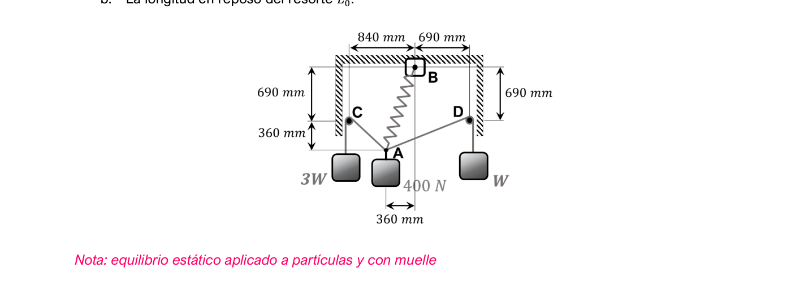
| Variable | Valor |
|---|---|
| Carga en A | \(400\ \text{N}\) ↓ |
| Constante del resorte | \(k = 800\ \text{N/m}\) |
| Bloques en C y D | \(3W\) y \(2W\) (incógnita \(W\)) |
| Incógnita | ángulo de equilibrio, longitud natural \(L_0\) |
Equilibrio estático de una partícula: \(\sum F_x = 0\) y \(\sum F_y = 0\).
Los anillos \(C\) y \(D\) son sin rozamiento, por lo que la tensión en la cuerda es igual al peso del bloque: \(T_{AC} = 3W\) y \(T_{AD} = W\).
La fuerza del resorte es \(F_s = k\,\delta\), donde \(\delta = L - L_0\) es el alargamiento.
¿Por qué? En problemas de equilibrio 3D, las fuerzas tienen dirección conocida pero módulo desconocido. Para proyectar las ecuaciones de equilibrio (∑F=0) sobre los ejes, hay que expresar cada fuerza como su módulo multiplicado por su vector unitario de dirección.
Coordenadas (eje \(x\) →, eje \(y\) ↑; origen en la esquina superior izquierda):
\[ B=(840,\ 0)\ \text{mm},\quad C=(0,\ {-690})\ \text{mm},\quad D=(1530,\ {-690})\ \text{mm},\quad A=(480,\ {-1050})\ \text{mm} \]Distancias (tríos pitagóricos):
\[ |BA|=\sqrt{360^2+1050^2}=\sqrt{1\,232\,100}=1110\ \text{mm}\quad(12\text{-}35\text{-}37\times 30) \] \[ |AC|=\sqrt{480^2+360^2}=\sqrt{360\,000}=600\ \text{mm}\quad(3\text{-}4\text{-}5\times 120) \] \[ |AD|=\sqrt{1050^2+360^2}=1110\ \text{mm} \]Vectores unitarios desde \(A\):
\[ \hat{u}_{AB}=\left(\frac{12}{37},\ \frac{35}{37}\right),\qquad \hat{u}_{AC}=\left(-\frac{4}{5},\ \frac{3}{5}\right),\qquad \hat{u}_{AD}=\left(\frac{35}{37},\ \frac{12}{37}\right) \]¿Por qué? Con los vectores unitarios calculados, la tensión en cada cuerda es igual a su módulo multiplicado por el vector unitario que apunta desde el punto de interés hacia el punto de anclaje. Así todas las tensiones quedan expresadas en términos de sus módulos desconocidos.
Sin rozamiento en los anillos, la tensión es igual al peso del bloque:
\[ T_{AC}=3W \qquad T_{AD}=W \]¿Por qué? Se impone ∑F=0 en el punto donde convergen las cuerdas. El sistema da los módulos de las tensiones y, a partir de ellos, el peso W desconocido.
\[ \sum F_x=0:\quad F_s\cdot\frac{12}{37}-3W\cdot\frac{4}{5}+W\cdot\frac{35}{37}=0 \] \[ \sum F_y=0:\quad F_s\cdot\frac{35}{37}+3W\cdot\frac{3}{5}+W\cdot\frac{12}{37}-400=0 \]De la ecuación en \(x\) (× 185):
\[ 60\,F_s-444W+175W=0 \quad\Rightarrow\quad F_s=\frac{269W}{60} \]Sustituyendo en la ecuación en \(y\) (denominador común 2220):
\[ \frac{9415W+3996W+720W}{2220}=400 \quad\Rightarrow\quad \frac{14131\,W}{2220}=400 \] \[ W=\frac{888\,000}{14\,131}\approx 62{,}8\ \text{N} \]¿Por qué? La tensión del resorte es \(T = k \cdot (l - l_0)\), donde \(l\) es la longitud actual y \(l_0\) la longitud en reposo. Con \(T\) ya calculada del equilibrio, se despeja \(l_0 = l - T/k\).
Fuerza en el resorte:
\[ F_s=\frac{269}{60}\cdot 62{,}8\approx 281{,}8\ \text{N} \]Alargamiento y longitud natural:
\[ \delta=\frac{F_s}{k}=\frac{281{,}8}{800}\approx 352\ \text{mm} \] \[ L_0=|BA|-\delta=1110-352=758\ \text{mm} \]Ménsula móvil: cable y rodillos
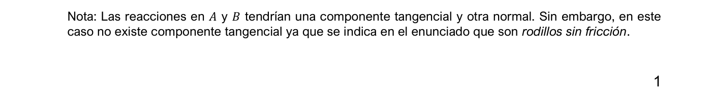
| Variable | Valor |
|---|---|
| Carga | \(600\ \text{N}\) |
| Longitud total del brazo | \(600\ \text{mm}\) (475 + 75 + 50) |
| Apoyos | rodillos sin fricción en \(A\) y \(B\); cable en \(C\) |
| Incógnitas | tensión del cable y reacciones en \(A\) y \(B\) |
Equilibrio estático de un sólido rígido en el plano: tres ecuaciones independientes.
\[ \sum F_x = 0 \qquad \sum F_y = 0 \qquad \sum M_O = 0 \]Los rodillos sin rozamiento solo transmiten la componente normal a la guía. La guía es vertical, por lo que las reacciones en \(A\) y \(B\) son horizontales y de sentidos opuestos (forman un par de fuerzas que equilibra el momento flector del brazo).
¿Por qué? El diagrama de fuerzas libres aísla el cuerpo y muestra todas las fuerzas externas: cargas aplicadas y reacciones en los apoyos (fuerza y/o momento). Sin este diagrama no se pueden plantear las ecuaciones de equilibrio.
Se identifican las incógnitas sobre el sólido (el brazo + la ménsula):
- Tensión del cable \(T\) en \(C\) (dirección vertical ↑, ya que el cable va al techo).
- Reacción \(A\) horizontal → en el rodillo superior (la guía empuja el brazo hacia la derecha cuando la parte superior está en tracción).
- Reacción \(B\) horizontal ← en el rodillo inferior (la guía empuja el brazo hacia la izquierda por la compresión en la parte inferior), a 90 mm por debajo de \(A\).
- Carga de 600 N ↓ en el extremo izquierdo, a 600 mm de la guía.
¿Por qué? La ecuación de equilibrio vertical relaciona la tensión del cable con la carga aplicada. Si el cable está inclinado, solo su componente vertical entra en esta ecuación.
\[ \sum F_y = 0:\quad T - 600 = 0 \quad\Rightarrow\quad T = 600\ \text{N} \]¿Por qué? La ecuación horizontal da la relación entre las reacciones horizontales en los dos apoyos. Si la carga es puramente vertical, las componentes horizontales deben compensarse entre sí.
\[ \sum F_x = 0:\quad A - B = 0 \quad\Rightarrow\quad A = B \]Las dos reacciones horizontales forman un par (igual módulo, sentidos contrarios).
¿Por qué? Sumando momentos respecto a A se elimina la reacción en A y se obtiene la reacción en B. Eligiendo el punto de suma de momentos convenientemente se reduce el número de incógnitas por ecuación.
Se toman momentos respecto a \(A\) (se elimina la incógnita \(A\) y \(T\) pasa por \(A\)):
\[ \sum M_A = 0:\quad 600 \times 600 - B \times 90 = 0 \] \[ B = \frac{600 \times 600}{90} = \frac{360\,000}{90} = 4000\ \text{N} \] \[ A = B = 4000\ \text{N} \]Comprobación: el momento flector en la sección \(A\text{-}B\) vale \(600 \times 600 = 360\,000\ \text{N·mm}\), igual al par de reacciones \(4000 \times 90 = 360\,000\ \text{N·mm}\). ✓
Cable \(ABD\) con polea en \(B\), soporte en \(C\)
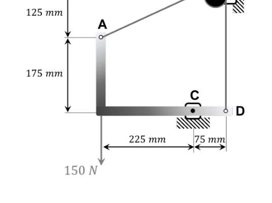
| Variable | Valor |
|---|---|
| Cable continuo | \(ABD\), polea sin rozamiento en \(B\) |
| Tracción en D | vertical ↑; tracción en A dada por geometría |
| Incógnitas | fuerza en el cable y reacciones en \(C\) |
Equilibrio estático de un sólido rígido en el plano: tres ecuaciones independientes.
\[ \sum F_x = 0 \qquad \sum F_y = 0 \qquad \sum M_C = 0 \]La polea sin rozamiento en \(B\) no cambia el módulo de la tensión: la tensión \(T\) es la misma a ambos lados. Las dos fuerzas de la tensión actúan sobre la escuadra en los puntos \(A\) y \(D\) con la dirección del cable correspondiente.
Estrategia: tomar momentos respecto a \(C\) para despejar \(T\) directamente (se eliminan \(C_x\) y \(C_y\)).
¿Por qué? En problemas de equilibrio 3D, las fuerzas tienen dirección conocida pero módulo desconocido. Para proyectar las ecuaciones de equilibrio (∑F=0) sobre los ejes, hay que expresar cada fuerza como su módulo multiplicado por su vector unitario de dirección.
Se toma la esquina inferior izquierda (punto de aplicación de 150 N) como origen \(O=(0,0)\):
\[ O=(0,0)\ \text{mm},\quad A=(0,175)\ \text{mm},\quad B=(300,300)\ \text{mm}, \] \[ C=(225,0)\ \text{mm},\quad D=(300,0)\ \text{mm} \]Vector unitario \(A \to B\) (dirección del cable en \(A\)):
\[ \vec{AB}=(300-0,\ 300-175)=(300,\ 125)\ \text{mm} \] \[ L_{AB}=\sqrt{300^2+125^2}=\sqrt{90\,000+15\,625}=\sqrt{105\,625}=325\ \text{mm}\quad(5\text{-}12\text{-}13\times 25) \] \[ \hat{u}_{AB}=\left(\frac{12}{13},\ \frac{5}{13}\right) \]El cable en \(D\) va recto hacia arriba: \(\hat{u}_{D}=(0,1)\).
¿Por qué? Al sumar momentos respecto a C (donde actúan las reacciones desconocidas en C), esas reacciones tienen brazo cero y no contribuyen al momento. Queda una ecuación directa en la única incógnita T.
Momentos respecto a \(C=(225,0)\) (antihorario positivo). Para cada fuerza \(\vec{F}\) aplicada en \(\vec{r}\) relativo a \(C\): \(M = r_x F_y - r_y F_x\).
\[ M_{150}=(0-225)\cdot(-150)-0\cdot 0=+33\,750\ \text{N·mm} \] \[ M_{T_D}=(300-225)\cdot T - 0\cdot 0=+75T\ \text{N·mm} \] \[ M_{T_A}=(0-225)\cdot\frac{5T}{13}-(175-0)\cdot\frac{12T}{13} =-\frac{1125T}{13}-\frac{2100T}{13}=-\frac{3225T}{13}\ \text{N·mm} \] \[ \sum M_C=0:\quad 33\,750+75T-\frac{3225T}{13}=0 \] \[ 33\,750+T\!\left(\frac{975-3225}{13}\right)=0 \quad\Rightarrow\quad 33\,750=\frac{2250T}{13} \] \[ T=\frac{33\,750\times 13}{2250}=\frac{438\,750}{2250}=195\ \text{N} \]¿Por qué? Con T ya calculada, el equilibrio horizontal da directamente la componente horizontal de la reacción en el apoyo C.
\[ \sum F_x=0:\quad C_x + T\cdot\frac{12}{13}=0 \quad\Rightarrow\quad C_x+195\cdot\frac{12}{13}=0 \] \[ C_x+180=0 \quad\Rightarrow\quad C_x=-180\ \text{N} \]¿Por qué? El equilibrio vertical da la componente vertical de la reacción en C. Juntas, las componentes horizontal y vertical forman la reacción total en C.
\[ \sum F_y=0:\quad C_y-150+T\cdot\frac{5}{13}+T=0 \] \[ C_y-150+195\cdot\frac{5}{13}+195=0 \quad\Rightarrow\quad C_y-150+75+195=0 \] \[ C_y+120=0 \quad\Rightarrow\quad C_y=-120\ \text{N} \]Entramado de 2 sólidos: reacciones en \(B\) y \(F\)
Geometría (origen en la esquina inferior izquierda del entramado): \(B=(400,225)\ \text{mm}\) (articulación derecha superior); \(F=(400,0)\ \text{mm}\) (articulación derecha inferior); \(C=(0,175)\ \text{mm}\) (articulación interna, punto de despiece); \(A=(200,225)\ \text{mm}\); \(D=(200,175)\ \text{mm}\); \(E=(200,0)\ \text{mm}\).
Sólido 1 (C-D-B): forma de L invertida — de \(C\) horizontal hasta \(D\), sigue hasta la esquina \((400,175)\) y sube hasta \(B\).
Sólido 2 (F-E-C-A): forma de C abierta a la derecha — de \(F\) horizontal hasta \(E\), sube hasta \(C\), y continúa hasta \(A\).
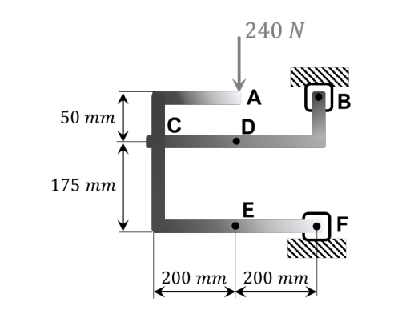
| Variable | Valor |
|---|---|
| Carga | \(240\ \text{N}\) |
| Casos | a) en \(A\); b) en \(D\); c) en \(E\) |
| Incógnitas | reacciones en \(B\) y \(F\) |
Con dos sólidos y 4 incógnitas de apoyo (\(B_x, B_y, F_x, F_y\)) más 2 reacciones internas en la articulación \(C\), disponemos de 6 ecuaciones (3 por sólido) para 6 incógnitas.
Estrategia de dos pasos:
- Sistema global: \(\sum M_F=0\) da \(B_x\); \(\sum F_x=0\) da \(F_x\).
- Despiece del Sólido 1: \(\sum M_C(\text{Sól. 1})=0\) da \(B_y\); \(\sum F_y=0\) global da \(F_y\).
Los tres puntos de carga (\(A\), \(D\), \(E\)) están en \(x=200\ \text{mm}\), por lo que las ecuaciones globales de momento y de fuerzas horizontales son idénticas en los tres casos. Solo cambia \(B_y\) y \(F_y\) según a qué sólido pertenece la carga.
¿Por qué? El equilibrio global (todo el sistema como un único cuerpo) da relaciones entre las reacciones externas. Las fuerzas internas entre piezas se cancelan. Las relaciones así obtenidas son válidas independientemente de dónde se coloque la carga.
\(\sum M_F=0\) respecto a \(F=(400,0)\). La carga 240 N está a 200 mm de \(F\) horizontalmente; \(B\) está a la misma \(x\) que \(F\), con lo que \(B_y\) no genera momento; \(B_x\) actúa a 225 mm de altura:
\[ \sum M_F=0:\quad 240\cdot 200 - B_x\cdot 225=0 \quad\Rightarrow\quad B_x=\frac{48\,000}{225}=213{,}3\ \text{N} \] \[ \sum F_x=0:\quad B_x+F_x=0 \quad\Rightarrow\quad F_x=-213{,}3\ \text{N} \]¿Por qué? Se aísla el sólido 1 de la máquina. Sumando momentos respecto a C se elimina la reacción en C y se obtiene la fuerza interna en B (o la buscada), que incluye la contribución de la carga si esta actúa en este sólido.
Fuerzas sobre el Sólido 1 con momento respecto a \(C=(0,175)\):
- \(B_x=213{,}3\ \text{N}\) actúa en \(B=(400,225)\), a 50 mm por encima de \(C\): genera giro horario → \(-B_x\cdot 50=-10\,666{,}67\ \text{N·mm}\).
- \(B_y\) actúa en \(B=(400,225)\), a 400 mm a la derecha de \(C\): genera giro antihorario → \(+B_y\cdot 400\).
- Carga de 240 N: solo si pertenece al Sólido 1 (caso b, en \(D=(200,175)\), 200 mm a la derecha de \(C\)): momento \(-(240\cdot 200)=-48\,000\ \text{N·mm}\).
¿Por qué? Si la carga actúa en el sólido 2, el sólido 1 no tiene carga aplicada directamente. En este caso el par de la carga en la ecuación de momentos del sólido 1 es cero, simplificando el cálculo.
\[ 400\,B_y-10\,666{,}67=0 \quad\Rightarrow\quad B_y=\frac{10\,666{,}67}{400}=26{,}7\ \text{N} \] \[ \sum F_y=0:\quad B_y+F_y-240=0 \quad\Rightarrow\quad F_y=240-26{,}7=213{,}3\ \text{N} \]¿Por qué? Si la carga está en el sólido 1, su momento respecto a C aparece en la ecuación del sólido 1. Hay que calcular el brazo de la carga respecto a C para obtener este momento.
\[ 400\,B_y-10\,666{,}67-48\,000=0 \quad\Rightarrow\quad B_y=\frac{58\,666{,}67}{400}=146{,}7\ \text{N} \] \[ F_y=240-146{,}7=93{,}3\ \text{N} \]¿Por qué? Si la carga está en el sólido 2, el sólido 1 no tiene carga local, igual que el caso a. La diferencia respecto al caso b es el valor numérico de la reacción en B.
\(E=(200,0)\) pertenece al Sólido 2, por lo que no actúa directamente sobre el Sólido 1. Las ecuaciones son idénticas al caso a.
Entramado de 2 sólidos: reacciones en \(A\) y \(C\)
Geometría (origen en \(B\)): \(B=(0,0)\ \text{mm}\) (carga \(W\) ↓); \(A=(60,30)\ \text{mm}\) (articulación externa); \(D=(200,0)\ \text{mm}\) (pasador interno, une los dos sólidos); \(C=(100,60)\ \text{mm}\) (articulación externa).
Sólido 1 (A-B-D): escuadra en T invertida.
Sólido 2 (C-D): escuadra — articulado solo en \(C\) y \(D\), sin fuerzas externas directas.
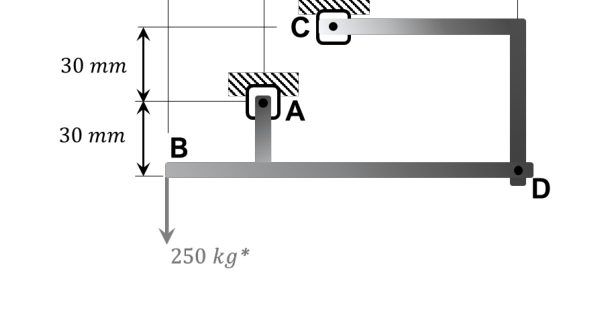
| Variable | Valor |
|---|---|
| Carga en B | \(W = 250\ \text{kg}^*\) ↓ |
| Posición de B | \((0,\,0)\ \text{mm}\) |
| Posición de A | \((60,\,30)\ \text{mm}\) |
| Incógnitas | reacciones en \(A\) y \(C\) |
Elemento de dos fuerzas: el Sólido 2 está articulado únicamente en \(C\) y \(D\) y no tiene ninguna carga externa. Por equilibrio, la fuerza que transmite es estrictamente colineal a la línea \(C\text{-}D\). Esto reduce una incógnita vectorial a una sola incógnita escalar.
La dirección de la fuerza en \(D\) queda fijada por la pendiente de la recta \(C\text{-}D\):
\[ \frac{D_y}{D_x}=\frac{\Delta y}{\Delta x}=\frac{60-0}{100-200}=\frac{60}{-100}=-0{,}6 \quad\Rightarrow\quad D_y=-0{,}6\,D_x \]Con esta relación se analizan las 3 ecuaciones del Sólido 1 con 3 incógnitas efectivas: \(A_x\), \(A_y\) y \(D_x\).
¿Por qué? Un elemento articulado en dos puntos sin carga entre ellos es un "elemento de dos fuerzas": la fuerza interna actúa necesariamente a lo largo de la línea que une los dos extremos. Esta restricción de dirección reduce el número de incógnitas de 2 a 1.
Vector \(D \to C\): \(\Delta x=100-200=-100\ \text{mm}\), \(\Delta y=60-0=60\ \text{mm}\).
\[ D_y=-0{,}6\,D_x \]¿Por qué? Se aísla el sólido 1 y se suma momentos respecto a A para eliminar las incógnitas en A. Con la dirección de D conocida del paso anterior, la ecuación da directamente D_x (y por tanto D_y).
Posiciones relativas a \(A=(60,30)\):
- \(B-A=(-60,-30)\): carga \((0,-250)\ \text{kg}^*\) → \(M_W=(-60)(-250)-(-30)(0)=+15\,000\ \text{kg}^*\text{·mm}\)
- \(D-A=(140,-30)\): fuerza \((D_x,D_y)\) → \(M_D=140\,D_y-(-30)\,D_x=140D_y+30D_x\)
Sustituyendo \(D_y=-0{,}6\,D_x\):
\[ M_D=140(-0{,}6\,D_x)+30\,D_x=-84\,D_x+30\,D_x=-54\,D_x \] \[ \sum M_A=0:\quad 15\,000-54\,D_x=0 \quad\Rightarrow\quad D_x=\frac{15\,000}{54}=277{,}77\ \text{kg}^* \] \[ D_y=-0{,}6\times 277{,}77=-166{,}67\ \text{kg}^* \]¿Por qué? Con la fuerza en D ya calculada, el equilibrio de fuerzas del sólido 1 da las componentes de la reacción en A.
\[ \sum F_x=0:\quad A_x+D_x=0 \quad\Rightarrow\quad A_x=-277{,}77\ \text{kg}^* \] \[ \sum F_y=0:\quad A_y-250+D_y=0 \quad\Rightarrow\quad A_y=250+166{,}67=416{,}67\ \text{kg}^* \]¿Por qué? Por la tercera ley de Newton, las fuerzas internas en D que el sólido 1 ejerce sobre el sólido 2 son iguales y opuestas. Se obtienen las reacciones en C del sólido 2 del equilibrio de ese sólido con las fuerzas externas y la fuerza interna en D.
El Sólido 1 ejerce sobre el Sólido 2 en \(D\) la fuerza \((-D_x,-D_y)\). Al ser un elemento de dos fuerzas, la reacción en \(C\) contrarresta exactamente esa acción:
\[ C_x=D_x=277{,}77\ \text{kg}^* \qquad C_y=D_y=-166{,}67\ \text{kg}^* \]Viga \(AB\) con carga distribuida + pieza \(BCD\)
Geometría: \(A=(0,0)\); \(B=(200,0)\ \text{mm}\) (pasador interno); \(C=(200,100)\ \text{mm}\) (rodilla de la pieza BCD, \(P\) horizontal →); \(D=(400,100)\ \text{mm}\) (articulación). Tramo \(BC\) vertical (100 mm), tramo \(CD\) horizontal (200 mm).
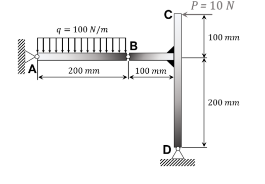
| Variable | Valor |
|---|---|
| Piezas | \(AB\) y \(BCD\) unidas por pasador en \(B\) |
| Articulaciones | \(A\) y \(D\) |
| Carga distribuida | \(q = 100\ \text{N/m}\) entre \(A\) y \(B\) |
| Carga puntual | \(P\) |
| Incógnitas | reacciones en \(A\), \(B\) y \(D\) |
Cuatro incógnitas externas (\(A_x, A_y, D_x, D_y\)) con solo 3 ecuaciones globales → hay que desmontar el sistema en el pasador \(B\) y analizar cada sólido por separado (6 ecuaciones para 6 incógnitas: 4 externas + 2 internas).
La carga distribuida uniforme \(q\) se sustituye por su resultante \(Q=q\cdot L\) aplicada en el punto medio del tramo.
\[ Q = 100\ \frac{\text{N}}{\text{m}} \times 0{,}2\ \text{m} = 20\ \text{N} \quad \text{en } x=100\ \text{mm} \]Por la 3ª Ley de Newton, las fuerzas internas en \(B\) sobre cada sólido son iguales y opuestas: si sobre AB el pasador ejerce \((B_x, B_y)\), sobre BCD ejerce \((-B_x, -B_y)\).
¿Por qué? Se aísla la viga AB y se suman momentos respecto a B. La reacción en B no contribuye al momento, quedando una ecuación directa en A_y. Es eficiente empezar por el sólido más sencillo.
Momentos respecto a \(B=(200,0)\). La reacción \((B_x,B_y)\) no genera momento.
\[ \sum M_B=0:\quad -A_y\cdot 200+Q\cdot 100=0 \] \[ -A_y\cdot 200+20\cdot 100=0 \quad\Rightarrow\quad A_y=\frac{2000}{200}=10\ \text{N} \]¿Por qué? El equilibrio de fuerzas de la viga AB da las relaciones entre las componentes de las reacciones en A y B. Con A_y ya conocida, se obtiene B_y.
\[ \sum F_y=0:\quad A_y - Q + B_y=0 \quad\Rightarrow\quad 10-20+B_y=0 \quad\Rightarrow\quad B_y=10\ \text{N} \] \[ \sum F_x=0:\quad A_x+B_x=0 \quad\Rightarrow\quad B_x=-A_x \]¿Por qué? Se aísla la pieza BCD. La articulación D es un "dos fuerzas" o tiene reacción conocida. Sumando momentos respecto a D se obtiene B_x directamente.
Origen local en \(D=(400,100)\). Fuerzas sobre BCD:
- En \(B=(200,0)\): fuerzas \((-B_x,\ -10)\) por 3ª Ley. Vector \(\overrightarrow{DB}=(-200,-100)\).
- En \(C=(200,100)\): \(P=(10,0)\). Vector \(\overrightarrow{DC}=(-200,0)\) — la línea de acción pasa exactamente por \(D\) → momento nulo.
Del paso 2: \(A_x=-B_x=-20\ \text{N}\)
¿Por qué? Con B_x y B_y conocidos, el equilibrio de fuerzas de la pieza BCD da las componentes de la reacción en D.
\[ \sum F_x=0:\quad -B_x+P+D_x=0 \quad\Rightarrow\quad -20+10+D_x=0 \quad\Rightarrow\quad D_x=10\ \text{N} \] \[ \sum F_y=0:\quad -B_y+D_y=0 \quad\Rightarrow\quad -10+D_y=0 \quad\Rightarrow\quad D_y=10\ \text{N} \]¿Por qué? Se verifica que las reacciones externas del sistema completo satisfacen ∑F=0 y ∑M=0. Esta comprobación detecta errores de signo o de cálculo antes de dar la solución final. Las fuerzas internas no deben aparecer en el equilibrio global.
\[ \sum F_x:\quad A_x+P+D_x=-20+10+10=0\ ✓ \] \[ \sum F_y:\quad A_y-Q+D_y=10-20+10=0\ ✓ \]Alambre homogéneo \(ABCD\): ángulo \(\theta\) para equilibrio
Geometría (origen en \(B=(0,0)\)): tramo \(AB\) es un arco semicircular de radio \(R=150\ \text{mm}\) a la izquierda de \(B\); tramo \(BC\) horizontal de 200 mm hacia la derecha hasta \(C=(200,0)\); tramo \(CD\) recto de 150 mm desde \(C\) inclinado \(\theta\) por debajo de la horizontal.
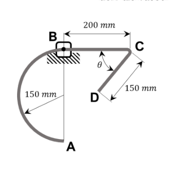
| Variable | Valor |
|---|---|
| Alambre | \(ABCD\) homogéneo, articulado en \(B\) |
| Incógnita | ángulo \(\theta\) para que \(BC\) sea horizontal |
Un cuerpo suspendido libremente de una articulación está en equilibrio solo si su centro de gravedad global \(G\) cae sobre la vertical que pasa por \(B\). Si \(G\) estuviera desplazado lateralmente, el peso generaría un momento respecto a \(B\) y el alambre rotaría.
Matemáticamente, situando el origen en \(B\), la condición es:
\[ \bar{x} = 0 \quad\Longleftrightarrow\quad \sum Q_y = \sum L_i\, x_i = 0 \]Como el alambre es homogéneo (densidad lineal \(\rho\) constante), \(\rho\) cancela en la ecuación y se trabaja directamente con longitudes.
Centroide de un arco semicircular: \(x_c = \dfrac{2R}{\pi}\) desde su diámetro.
¿Por qué? El centro de masa de un arco semicircular no coincide con el centro geométrico. Se calcula integrando la posición a lo largo del arco: ȳ = 2R/π desde el centro. Hay que aplicar este resultado al tramo AB para obtener su contribución al CG total.
\[ L_1 = \pi R = 150\pi\ \text{mm} \]El centroide del arco está a \(2R/\pi\) del diámetro, hacia la izquierda de \(B\):
\[ x_1 = -\frac{2\cdot 150}{\pi} = -\frac{300}{\pi}\ \text{mm} \] \[ Q_{y1} = L_1\cdot x_1 = 150\pi\cdot\left(-\frac{300}{\pi}\right) = -45\,000\ \text{mm}^2 \]¿Por qué? El CG de una barra recta está en su punto medio. Se calcula la posición del punto medio de BC y su longitud para la suma ponderada.
\[ L_2 = 200\ \text{mm} \qquad x_2 = 100\ \text{mm (punto medio)} \] \[ Q_{y2} = 200\cdot 100 = 20\,000\ \text{mm}^2 \]¿Por qué? La barra inclinada CD tiene su CG en el punto medio. Las coordenadas del punto medio dependen del ángulo θ, que es la incógnita del problema.
\[ L_3 = 150\ \text{mm} \]El centroide está en el punto medio de \(CD\), a 75 mm de \(C\) a lo largo de la barra. La proyección horizontal:
\[ x_3 = 200 - 75\cos\theta \] \[ Q_{y3} = 150\cdot(200-75\cos\theta) = 30\,000 - 11\,250\cos\theta\ \text{mm}^2 \]¿Por qué? El cuerpo en equilibrio bajo gravedad tiene el CG total directamente sobre el punto de apoyo. La condición es que la suma ponderada de las coordenadas y de cada tramo, dividida por la longitud total, sea igual a cero (o a la coordenada y del punto de apoyo). Esto da la ecuación en θ.
\[ Q_{y1}+Q_{y2}+Q_{y3}=0 \] \[ -45\,000+20\,000+(30\,000-11\,250\cos\theta)=0 \] \[ 5\,000-11\,250\cos\theta=0 \quad\Rightarrow\quad \cos\theta=\frac{5\,000}{11\,250}=\frac{4}{9} \] \[ \theta=\arccos\!\left(\frac{4}{9}\right)\approx 63{,}61° \]Polea \(R=60\ \text{mm}\), reacciones en \(A\) y \(E\)
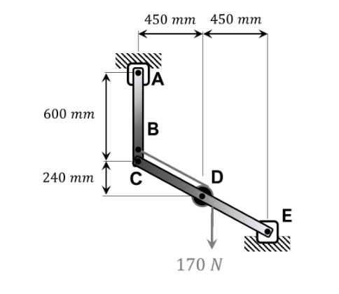
| Variable | Valor |
|---|---|
| Radio de la polea | \(R = 60\ \text{mm}\) |
| Carga suspendida | \(W = 170\ \text{N}\) |
| Incógnitas | reacciones en \(A\) y \(E\) |
Regla de oro para la polea: aislar la polea primero. Al ser ideal (sin rozamiento), la tensión \(T\) es la misma a lo largo de todo el cable. La polea transmite al pasador \(D\) la resultante vectorial de las dos tensiones del cable.
Para el sistema de dos sólidos se aplica la misma estrategia que en los ejercicios anteriores: ecuaciones globales para obtener las relaciones entre apoyos, y luego despiece de un sólido para desacoplar las incógnitas.
¿Por qué? Una polea ideal (sin rozamiento) no cambia la magnitud de la tensión del cable, solo su dirección. Se identifican las dos ramas del cable y sus ángulos para calcular la fuerza resultante que la polea transmite al soporte.
La polea es ideal → \(T = W = 170\ \text{N}\) en todo el cable.
El cable que cuelga tira verticalmente hacia abajo con 170 N. El cable que va al anclaje \(B\) forma con la vertical el triángulo 8-15-17 (×30):
\[ \Delta x = 450\ \text{mm},\quad \Delta y = 240\ \text{mm},\quad L = \sqrt{450^2+240^2}=510\ \text{mm} \] \[ T_x = 170\cdot\frac{450}{510} = 150\ \text{N}\quad(\leftarrow)\qquad T_y = 170\cdot\frac{240}{510} = 80\ \text{N}\quad(\uparrow) \]Resultante que la polea transmite al pasador \(D\) del elemento CDE (suma de ambas tensiones):
\[ F_{D,x} = 0 + (-150) = -150\ \text{N} \qquad F_{D,y} = -170 + 80 = -90\ \text{N} \]¿Por qué? El equilibrio global da relaciones entre las reacciones externas sin tener que conocer las fuerzas internas. Es útil para obtener relaciones entre reacciones antes de hacer el despiece.
Las fuerzas del cable entre \(B\) y la polea son internas al sistema global. Las únicas fuerzas externas son las reacciones en \(A\) y \(E\) y el peso \(W=170\ \text{N}\):
\[ \sum F_x=0:\quad A_x+E_x=0 \quad\Rightarrow\quad A_x=-E_x \] \[ \sum F_y=0:\quad A_y+E_y-170=0 \quad\Rightarrow\quad A_y+E_y=170\ \text{N} \]¿Por qué? Se aísla el elemento CDE con todas sus fuerzas: cargas externas, fuerza de la polea y reacciones. Sumando momentos respecto a un punto conveniente se obtiene la reacción en E.
Aislando el sólido CDE con las fuerzas en \(C\) (reacción interna), en \(D\) (resultado del paso 1) y en \(E\) (apoyo externo), y resolviendo el sistema de ecuaciones del despiece:
\[ E_x = 17\ \text{N} \qquad E_y = 76\ \text{N} \]¿Por qué? Con la reacción en E conocida, las ecuaciones de equilibrio global del paso 2 permiten calcular las componentes de la reacción en A.
\[ A_x = -E_x = -17\ \text{N} \] \[ A_y = 170 - E_y = 170 - 76 = 94\ \text{N} \]Polea \(R=75\ \text{mm}\), reacciones en \(A\) y \(B\)
Geometría (origen en la esquina inferior izquierda, a la misma horizontal que \(D\)): \(A=(0,200)\ \text{mm}\) (soporte superior izquierdo); \(B=(600,200)\ \text{mm}\) (soporte superior derecho); \(C=(0,75)\ \text{mm}\) (anclaje del cable, a 125 mm por debajo de \(A\)); \(D=(300,0)\ \text{mm}\) (pasador interno); \(E=(600,0)\ \text{mm}\) (centro de la polea, \(R=75\ \text{mm}\)).
El cable parte de \(C\), va horizontalmente hasta la parte superior de la polea \((600,75)\) y luego cae verticalmente hasta la carga, que cuelga desde el borde derecho de la polea \((675,0)\).
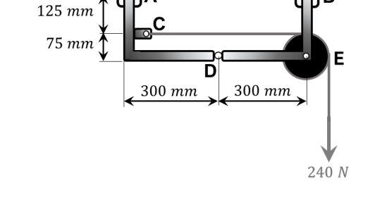
| Variable | Valor |
|---|---|
| Radio de la polea | \(R = 75\ \text{mm}\) |
| Carga | \(W = 240\ \text{N}\) (cuelga del borde derecho) |
| Articulación interna | \(D\) |
| Incógnitas | reacciones en \(A\) y \(B\) |
Polea ideal (sin rozamiento): \(T=240\ \text{N}\) en todo el cable. La polea transmite al pasador \(E\) la resultante de las dos tensiones del cable.
La tensión horizontal actúa en la parte superior de la polea \((600,75)\); la tensión vertical actúa en el borde derecho \((675,0)\). Para el análisis del sólido que contiene la polea, estas fuerzas actúan en esos puntos concretos, lo que significa que crean momentos respecto al pasador \(D\).
Estrategia: equilibrio global → \(B_y\) y relación \(A_y\). Despiece del sólido derecho (D-E-B) → \(B_x\) → \(A_x\).
¿Por qué? El cable aplica fuerzas en los puntos donde entra y sale del sistema. Si la tensión es la misma en toda la cuerda, se calculan las componentes de cada rama del cable sobre el elemento estructural.
\(T=240\ \text{N}\). El tramo horizontal del cable es una fuerza interna del sistema global (se anula entre \(C\) y la polea). La única fuerza externa es la carga de 240 N hacia abajo, aplicada en \(x=675\ \text{mm}\).
¿Por qué? El equilibrio vertical del sistema completo da una ecuación en las reacciones en A y B. Combinada con momentos respecto a un apoyo, se obtienen B_y y A_y.
\(\sum M_A=0\) respecto a \(A=(0,200)\). \(B_x\) actúa a la misma altura que \(A\) → brazo cero; \(B_y\) actúa a 600 mm a la derecha:
\[ 600\,B_y - 240\times 675 = 0 \quad\Rightarrow\quad B_y=\frac{162\,000}{600}=270\ \text{N} \] \[ \sum F_y=0:\quad A_y+B_y-240=0 \quad\Rightarrow\quad A_y=240-270=-30\ \text{N} \]¿Por qué? Se aísla el sólido derecho (elemento D-E-B). Sumando momentos respecto a D o E se elimina la fuerza interna y se obtiene B_x.
Se aísla el sólido derecho que incluye el pasador \(D\), la polea en \(E\) y el soporte \(B\). Fuerzas externas sobre este sólido:
- Reacción en \(B=(600,200)\): \((B_x,\ 270)\).
- Tensión horizontal del cable: 240 N hacia la izquierda en \((600,75)\).
- Tensión vertical del cable: 240 N hacia abajo en \((675,0)\).
- Reacción interna en \(D=(300,0)\): \((D_x,D_y)\) — se elimina tomando momentos en \(D\).
\(\sum M_D=0\) respecto a \(D=(300,0)\) (antihorario positivo):
\[ \underbrace{(300)\cdot 270 - (200)\cdot B_x}_{B} + \underbrace{(300)\cdot 0 - (75)\cdot(-240)}_{\text{cable horiz.}} + \underbrace{(375)\cdot(-240) - (0)\cdot 0}_{\text{cable vert.}} = 0 \] \[ (81\,000 - 200\,B_x) + 18\,000 - 90\,000 = 0 \] \[ -200\,B_x + 9\,000 = 0 \quad\Rightarrow\quad B_x=45\ \text{N} \]¿Por qué? Con B_x calculado, el equilibrio horizontal global da directamente A_x por ∑Fx = 0: A_x + B_x + (suma de fuerzas del cable horizontales) = 0.
\[ \sum F_x=0:\quad A_x+B_x=0 \quad\Rightarrow\quad A_x=-45\ \text{N} \]Reacciones con cargas distribuidas (4 casos)
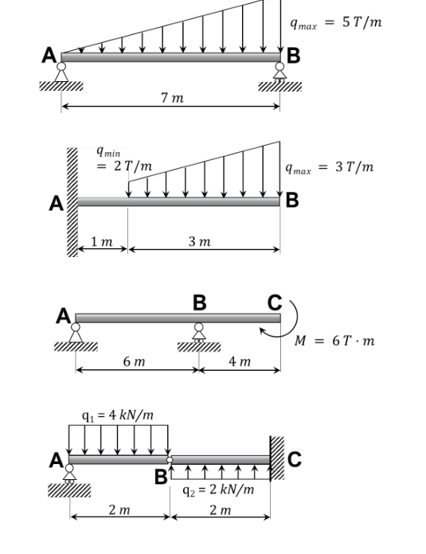
| Variable | Valor |
|---|---|
| Viga | biapoyada (articulación en \(A\), rodillo en el otro apoyo) |
| Casos | 4 distribuciones de carga distintas |
| Incógnitas | reacciones en ambos apoyos en cada caso |
Para reemplazar una carga distribuida por su equivalente puntual se aplican dos principios:
- Magnitud: igual al área bajo la curva de carga \(Q = \int q\,dx\).
- Punto de aplicación: centroide del área de carga.
Centroides útiles: triángulo rectángulo → \(\bar{x} = \tfrac{1}{3}\) desde la base (o \(\tfrac{2}{3}\) desde el vértice); rectángulo → \(\bar{x} = \tfrac{1}{2}\) de la base. Una carga trapezoidal se descompone en rectángulo + triángulo.
Un par puro (momento \(M\)) no añade fuerza neta, pero sí crea un par de reacciones verticales opuestas en los apoyos.
¿Por qué? Una carga triangular se reemplaza por una fuerza puntual igual a su área (F = q_max·L/2) aplicada en el tercio de la base desde el extremo de mayor carga. Esto simplifica el equilibrio a fuerzas puntuales.
La carga es triangular: nula en \(A\) y máxima en \(B\). Fuerza equivalente y centroide:
\[ Q = \frac{1}{2}\cdot 7\cdot 5 = 17{,}5\ \text{T} \qquad x_G = \frac{2}{3}\cdot 7 = 4{,}667\ \text{m}\ (\text{desde }A) \] \[ \sum M_A=0:\quad B_y\cdot 7 - 17{,}5\cdot 4{,}667=0 \quad\Rightarrow\quad B_y=\frac{81{,}67}{7}=11{,}67\ \text{T} \] \[ \sum F_y=0:\quad A_y+11{,}67-17{,}5=0 \quad\Rightarrow\quad A_y=5{,}83\ \text{T} \]¿Por qué? Una carga trapezoidal se descompone en rectangular (q_min·L, centrada) más triangular ((q_max-q_min)·L/2, al tercio del extremo mayor). Se calculan las dos fuerzas resultantes y sus puntos de aplicación por separado.
Se descompone el trapecio en rectángulo (2 T/m base) + triángulo (1 T/m extra):
\[ Q_{\text{rect}}=2\cdot 4=8\ \text{T}\quad(x=2\ \text{m}) \qquad Q_{\text{tri}}=\frac{1\cdot 4}{2}=2\ \text{T}\quad\left(x=\frac{2}{3}\cdot 4=2{,}667\ \text{m}\right) \] \[ \sum M_A=0:\quad B_y\cdot 4 - 8\cdot 2 - 2\cdot 2{,}667=0 \quad\Rightarrow\quad 4B_y=21{,}33 \quad\Rightarrow\quad B_y=5{,}33\ \text{T} \] \[ \sum F_y=0:\quad A_y+5{,}33-10=0 \quad\Rightarrow\quad A_y=4{,}67\ \text{T} \]¿Por qué? Un par puro no crea reacciones netas de fuerza pero sí de momento. En una viga biapoyada, un par exterior crea una reacción igual en ambos apoyos pero de sentido opuesto: R_A = R_B = M/L (en direcciones opuestas verticales).
Un par puro no añade fuerza neta al sistema. Los apoyos generan un par de reacciones verticales opuestas para equilibrar el momento:
\[ \sum M_A=0:\quad B_y\cdot 10 - 6=0 \quad\Rightarrow\quad B_y=0{,}6\ \text{T} \] \[ \sum F_y=0:\quad A_y+0{,}6=0 \quad\Rightarrow\quad A_y=-0{,}6\ \text{T} \]¿Por qué? Cada tramo de carga distribuida uniforme se convierte en una fuerza puntual (q·L) aplicada en su punto medio. Las dos fuerzas resultantes se tratan como cargas concentradas en el cálculo de reacciones.
Dos tramos rectangulares independientes:
\[ Q_1=4\cdot 2=8\ \text{kN}\quad(x=1\ \text{m desde }A) \qquad Q_2=2\cdot 2=4\ \text{kN}\quad(x=3\ \text{m desde }A) \] \[ \sum M_A=0:\quad B_y\cdot 4 - 8\cdot 1 - 4\cdot 3=0 \quad\Rightarrow\quad 4B_y=20 \quad\Rightarrow\quad B_y=5\ \text{kN} \] \[ \sum F_y=0:\quad A_y+5-8-4=0 \quad\Rightarrow\quad A_y=7\ \text{kN} \]b) \(A_y=4{,}67\ \text{T},\ B_y=5{,}33\ \text{T}\)
c) \(A_y=-0{,}6\ \text{T},\ B_y=0{,}6\ \text{T}\)
d) \(A_y=7\ \text{kN},\ B_y=5\ \text{kN}\)
Placa \(ABCD\): CG, inercia e equilibrio estático
Geometría (cm): \(A=(0,0)\), \(B=(0,30)\), \(C=(15,30)\), \(D=(15,15)\). El lado \(DA\) es oblicuo con ecuación \(y=x\). El cable \(DE\) conecta \(D=(15,15)\) con el anclaje \(E=(45,0)\).
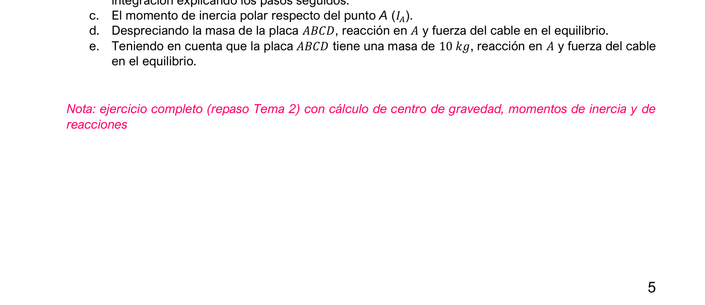
| Variable | Valor |
|---|---|
| Placa | \(ABCD\), masa uniforme, articulada en \(A\) |
| Cable en D | tensión desconocida |
| Fuerza horizontal en C | \(P = 50\ \text{N}\) |
| Incógnitas | CG; \(I_x\), \(I_y\), \(I_A\); reacciones en \(A\) |
La placa se descompone en dos áreas básicas: rectángulo superior (entre \(y=15\) e \(y=30\)) y triángulo inferior (vértices en \((0,0)\), \((0,15)\), \((15,15)\)).
Los momentos de inercia se calculan por integración directa: \(I_y = \int x^2\,dA\) con franjas verticales; \(I_x = \int y^2\,dA\) con franjas horizontales (el límite del borde oblicuo cambia en \(y=15\)).
El momento polar respecto a \(A\) se obtiene por el teorema de los ejes perpendiculares: \(I_A = I_x + I_y\).
¿Por qué? El centro de masa de un cuerpo con densidad uniforme está en el centroide geométrico. Para figuras compuestas se calcula como la media ponderada por área (o volumen) de los centroides de cada subregion.
Áreas y centroides de las dos partes:
\[ A_1=15\times 15=225\ \text{cm}^2,\quad \bar{x}_1=7{,}5\ \text{cm},\quad \bar{y}_1=22{,}5\ \text{cm} \] \[ A_2=\frac{15\times 15}{2}=112{,}5\ \text{cm}^2,\quad \bar{x}_2=5\ \text{cm},\quad \bar{y}_2=10\ \text{cm} \] \[ A_{\text{tot}}=337{,}5\ \text{cm}^2 \] \[ x_G=\frac{225\times 7{,}5+112{,}5\times 5}{337{,}5}=\frac{2250}{337{,}5}=6{,}67\ \text{cm} \] \[ y_G=\frac{225\times 22{,}5+112{,}5\times 10}{337{,}5}=\frac{6187{,}5}{337{,}5}=18{,}33\ \text{cm} \]¿Por qué? El momento de inercia de área respecto a un eje es \(I = \int y^2 dA\). Se integra para obtener el valor exacto, luego se puede aplicar Steiner para obtener \(I\) respecto a otros ejes paralelos.
\(I_y\) — franjas verticales, altura \((30-x)\) (el borde oblicuo \(y=x\) limita por abajo):
\[ I_y=\int_0^{15}x^2(30-x)\,dx=\int_0^{15}(30x^2-x^3)\,dx =\left[10x^3-\frac{x^4}{4}\right]_0^{15} \] \[ I_y=10(3375)-\frac{50625}{4}=33750-12656{,}25=21093{,}75\ \text{cm}^4 \]\(I_x\) — franjas horizontales en dos tramos (el borde derecho cambia en \(y=15\)):
\[ I_x=\int_0^{15}y^2(y\,dy)+\int_{15}^{30}y^2(15\,dy) =\left[\frac{y^4}{4}\right]_0^{15}+5\left[y^3\right]_{15}^{30} \] \[ I_x=12656{,}25+5(27000-3375)=12656{,}25+118125=130781{,}25\ \text{cm}^4 \]¿Por qué? El momento de inercia polar respecto al punto A es \(J_A = I_{x,A} + I_{y,A}\). Si se conocen \(I\) respecto al centroide, se aplica Steiner: \(I_{x,A} = I_{x,G} + A\cdot d^2\).
\[ I_A=I_x+I_y=130781{,}25+21093{,}75=151875\ \text{cm}^4 \]¿Por qué? Si la masa de la figura es despreciable, solo actúan fuerzas externas (fuerzas puntuales, reacciones). Se aplican las ecuaciones de equilibrio ∑F=0 y ∑M=0 con estas cargas.
Dirección del cable \(DE\): de \(D(15,15)\) a \(E(45,0)\) → \(\vec{DE}=(30,-15)\), \(|\vec{DE}|=\sqrt{900+225}=15\sqrt{5}\ \text{cm}\).
\[ \hat{u}_{DE}=\left(\frac{2}{\sqrt{5}},\ -\frac{1}{\sqrt{5}}\right) \quad\Rightarrow\quad T_x=\frac{2T}{\sqrt{5}},\quad T_y=-\frac{T}{\sqrt{5}} \]\(\sum M_A=0\) (antihorario positivo):
\[ \underbrace{+1500}_{P\text{ en }C} - \frac{45T}{\sqrt{5}}=0 \quad\Rightarrow\quad T=\frac{1500\sqrt{5}}{45}\approx 74{,}5\ \text{N} \] \[ \sum F_x=0:\quad A_x-50+\frac{2T}{\sqrt{5}}=0 \quad\Rightarrow\quad A_x=-16{,}7\ \text{N} \] \[ \sum F_y=0:\quad A_y-\frac{T}{\sqrt{5}}=0 \quad\Rightarrow\quad A_y=33{,}3\ \text{N} \]¿Por qué? Cuando la masa no es despreciable, el peso mg del cuerpo actúa en el centro de masa. Hay que añadir esta fuerza a las ecuaciones de equilibrio del apartado anterior.
Peso \(W=10\times 9{,}8=98\ \text{N}\) aplicado hacia abajo en \(G=(6{,}67,18{,}33)\ \text{cm}\). Se añade el momento de \(W\) respecto a \(A\):
\[ \sum M_A=0:\quad 1500-\underbrace{98\times 6{,}67}_{653{,}3}-\frac{45T}{\sqrt{5}}=0 \] \[ 846{,}7=\frac{45T}{\sqrt{5}} \quad\Rightarrow\quad T=\frac{846{,}7\sqrt{5}}{45}\approx 42{,}1\ \text{N} \] \[ \sum F_x=0:\quad A_x-50+\frac{2\times 42{,}1}{\sqrt{5}}=0 \quad\Rightarrow\quad A_x\approx +12{,}3\ \text{N} \] \[ \sum F_y=0:\quad A_y-98-\frac{42{,}1}{\sqrt{5}}=0 \quad\Rightarrow\quad A_y\approx 116{,}8\ \text{N} \]b) \(I_y=21093{,}75\ \text{cm}^4,\quad I_x=130781{,}25\ \text{cm}^4\)
c) \(I_A=151875\ \text{cm}^4\)
d) \(T=74{,}5\ \text{N},\ A_x=-16{,}7\ \text{N},\ A_y=33{,}3\ \text{N}\)
e) \(T=42{,}1\ \text{N},\ A_x=+12{,}3\ \text{N},\ A_y=116{,}8\ \text{N}\)
Mecanismo articulado: ángulo de equilibrio \(\theta\)
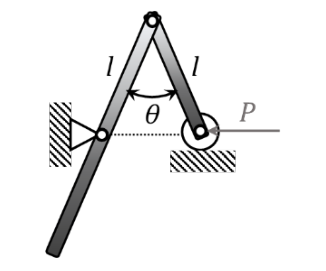
| Variable | Valor |
|---|---|
| Barra 1 | longitud \(l\), masa \(m\) |
| Barra 2 | longitud \(2l\), masa \(2m\) |
| Fuerza aplicada | \(P\) (extremo libre) |
| Ángulo del mecanismo | \(\theta\) |
| Incógnita | \(P\) para equilibrio en función de \(\theta\) |
En un mecanismo articulado paramétrico la estrategia más elegante es el Principio de los Trabajos Virtuales (PTV): el sistema está en equilibrio cuando la derivada de la energía total respecto al ángulo de apertura es nula.
\[ \frac{dU}{d\theta}=0 \quad\Longleftrightarrow\quad \frac{d(W_P)}{d\theta}=\frac{d(V_{\text{grav}})}{d\theta} \]Se define \(\alpha=\theta/2\) como el ángulo que forma cada barra con el eje de simetría. El mecanismo es simétrico, por lo que los centros de masa se mueven simétricamente.
¿Por qué? Para aplicar el método de la energía potencial, hay que expresar la altura de cada masa como función de la coordenada generalizada (normalmente un ángulo θ). La derivada de la energía potencial gravitatoria respecto a θ da la condición de equilibrio.
Tomando el origen \(y=0\) en la articulación superior fija y positivo hacia abajo:
\[ y_1 = \frac{l}{2}\cos\!\left(\frac{\theta}{2}\right) \qquad\Rightarrow\qquad V_1 = -mg\cdot\frac{l}{2}\cos\!\left(\frac{\theta}{2}\right) \] \[ y_2 = l\cos\!\left(\frac{\theta}{2}\right) \qquad\Rightarrow\qquad V_2 = -2mg\cdot l\cos\!\left(\frac{\theta}{2}\right) \]Energía potencial gravitatoria total (agrupando):
\[ V_{\text{total}} \propto -mgl\cos\!\left(\frac{\theta}{2}\right) \]¿Por qué? El trabajo virtual de una fuerza P es \(\delta W = P \cdot \delta x_P\), donde \(\delta x_P\) es el desplazamiento virtual del punto de aplicación en la dirección de P. Se expresa en función de la variación de la coordenada generalizada.
El desplazamiento horizontal del punto de aplicación de \(P\) en función de \(\theta\):
\[ x_P = 4l\sin\!\left(\frac{\theta}{2}\right) \] \[ W_P = P\cdot x_P = 4Pl\sin\!\left(\frac{\theta}{2}\right) \]¿Por qué? El equilibrio se da cuando la derivada de la energía potencial total respecto a la coordenada generalizada es cero: \(dU/dθ = 0\). Si hay trabajo de fuerzas no conservativas, el principio de los trabajos virtuales da \(\delta W_{total} = 0\).
Derivando respecto a \(\theta/2\) e igualando trabajo y variación de energía potencial:
\[ \frac{d(W_P)}{d(\theta/2)} = 4Pl\cos\!\left(\frac{\theta}{2}\right) \] \[ \frac{d(V)}{d(\theta/2)} = mgl\sin\!\left(\frac{\theta}{2}\right) \] \[ mgl\sin\!\left(\frac{\theta}{2}\right) = 4Pl\cos\!\left(\frac{\theta}{2}\right) \]¿Por qué? La ecuación resultante es trigonométrica o algebraica en θ. Se resuelve numéricamente o analíticamente para obtener el ángulo de equilibrio.
Dividiendo ambos miembros entre \(mgl\cos(\theta/2)\):
\[ \tan\!\left(\frac{\theta}{2}\right) = \frac{4P}{mg} \] \[ \theta = 2\arctan\!\left(\frac{4P}{mg}\right) \]Peso mínimo del vaso cilíndrico para evitar el vuelco ★ ★ Nivel Examen
Esfera 1 (inferior): apoyada en el suelo y en la pared izquierda.
Esfera 2 (superior): apoyada sobre la Esfera 1 y en la pared derecha.
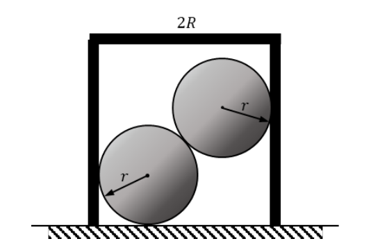
| Variable | Valor |
|---|---|
| Vaso cilíndrico invertido | radio \(R\) |
| Esferas | radio \(r\), masa \(m\) cada una |
| Condición | sin rozamiento |
| Incógnita | peso mínimo \(Q\) del vaso para que no vuelque |
Superficies lisas (sin rozamiento): todas las reacciones son normales a las superficies de contacto. La fuerza entre las dos esferas actúa a lo largo de la línea que une sus centros.
Geometría del contacto: la distancia entre centros es \(2r\) (hipotenusa). La distancia horizontal es \(\Delta x = 2(R-r)\). El ángulo \(\alpha\) de esa línea con la horizontal satisface:
\[ \cos\alpha = \frac{R-r}{r} \]Condición de vuelco: el vaso está a punto de volcar cuando pierde contacto con el suelo por el lado izquierdo y toda la reacción del suelo se concentra en la esquina inferior derecha \(O\). En ese instante crítico \(\sum M_O = 0\).
¿Por qué? Se aísla primero la esfera superior porque sus reacciones son más simples: contacto con la pared (normal) y con la esfera inferior (normal en la línea de centros). Su equilibrio da la fuerza de contacto entre las dos esferas.
Fuerzas: peso \(mg\) ↓, reacción de la pared derecha \(N_R\) ←, fuerza de la Esfera 1 (\(N_{12}\)) inclinada \(\alpha\) sobre la horizontal.
\[ \sum F_y=0:\quad N_{12}\sin\alpha - mg=0 \quad\Rightarrow\quad N_{12}=\frac{mg}{\sin\alpha} \] \[ \sum F_x=0:\quad N_R - N_{12}\cos\alpha=0 \quad\Rightarrow\quad N_R=\frac{mg}{\sin\alpha}\cdot\cos\alpha=mg\cot\alpha \]¿Por qué? El sistema completo (ambas esferas) tiene reacciones horizontales en la pared y en el fondo de la caja. El equilibrio horizontal global da una relación entre estas reacciones sin depender de las fuerzas internas entre esferas.
Para el conjunto de las dos esferas, la fuerza horizontal neta es cero: la pared izquierda empuja a la derecha con \(N_L\) y la pared derecha empuja a la izquierda con \(N_R\):
\[ N_L = N_R = mg\cot\alpha \]¿Por qué? El vuelco del contenedor ocurre cuando la suma de momentos respecto a la arista O de vuelco es nula (situación límite). Se calcula la relación geométrica (radio, posición de los centros) necesaria para que no se produzca el vuelco.
Momentos respecto al punto crítico \(O\) (esquina inferior derecha), antihorario positivo. \(N_L\) actúa a altura \(r\) (centro Esfera 1); \(N_R\) actúa a altura \(y_2\) (centro Esfera 2); \(Q\) actúa en el centro del vaso a distancia horizontal \(R\) de \(O\):
\[ \sum M_O=0:\quad Q\cdot R + N_L\cdot r - N_R\cdot y_2=0 \]Como \(N_L=N_R\):
\[ Q\cdot R = N_R(y_2-r) \]La diferencia de alturas \(y_2-r\) es el cateto vertical del triángulo entre centros:
\[ y_2-r=2r\sin\alpha \] \[ Q\cdot R = mg\cot\alpha\cdot 2r\sin\alpha = mg\cdot\frac{\cos\alpha}{\sin\alpha}\cdot 2r\sin\alpha = 2mgr\cos\alpha \]¿Por qué? La condición de equilibrio obtenida contiene cosα (o sinα), que se expresa en términos de la geometría (radios, anchura). La sustitución da la relación final entre las magnitudes geométricas del sistema.
Del paso de geometría: \(\cos\alpha=(R-r)/r\).
\[ Q\cdot R = 2mgr\cdot\frac{R-r}{r} = 2mg(R-r) \] \[ Q = \frac{2mg(R-r)}{R} = \frac{2R-2r}{R}\,mg \]Barra en pista semicircular: ángulo de equilibrio \(\theta\) ★ ★ Nivel Examen
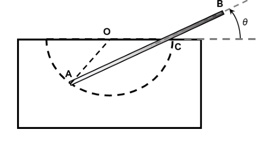
| Variable | Valor |
|---|---|
| Barra \(AB\) | longitud \(L = 3R\), peso \(P\), homogénea |
| Pista | semicircular, radio \(R\), sin rozamiento |
| Incógnitas | posición de equilibrio y reacciones en \(A\) y \(C\) |
Geometría clave — Triángulo OAC: \(OC=OA=R\) → triángulo isósceles. La barra \(AC\) es la cuerda y forma un ángulo \(\theta\) con la horizontal (\(OC\)). El ángulo \(\angle OCA = \angle OAC = \theta\) (ángulos de la base del isósceles). Por tanto:
\[ L_{AC} = 2R\cos\theta \]La reacción en \(A\) es normal a la pista, es decir, apunta hacia \(O\), formando el mismo ángulo \(\theta\) con la propia barra.
Sistema de referencia rotado alineado con la barra (eje \(x\) a lo largo de \(AC\), eje \(y\) perpendicular) simplifica las ecuaciones al eliminar componentes innecesarias.
¿Por qué? La barra está en contacto con varias superficies. La ecuación de fuerzas en la dirección longitudinal de la barra (eje x del sólido libre) proporciona directamente la normal N_A en el apoyo A, que actua perpendicularmente a la barra.
Componentes a lo largo de la barra: \(N_A\cos\theta\) (hacia \(C\)) y \(-P\sin\theta\) (peso tira hacia \(A\)); \(N_C\) es perpendicular a la barra → componente nula.
\[ N_A\cos\theta - P\sin\theta = 0 \quad\Rightarrow\quad N_A = P\tan\theta \]¿Por qué? Sumando momentos respecto a C (donde convergen varias fuerzas desconocidas) se simplifica la ecuación. El resultado contiene θ implícitamente a través de los brazos de palanca y los ángulos de las normales.
Momentos respecto a \(C\) (elimina \(N_C\)). La distancia \(d_{CG}\) es \(L_{AC}-1{,}5R = 2R\cos\theta - 1{,}5R\).
\[ (N_A\sin\theta)\cdot(2R\cos\theta) - (P\cos\theta)\cdot(2R\cos\theta - 1{,}5R) = 0 \]Sustituyendo \(N_A=P\tan\theta\) y dividiendo entre \(P\) y \(R\):
\[ \frac{\sin^2\theta}{\cos\theta}(2\cos\theta) - \cos\theta(2\cos\theta - 1{,}5) = 0 \] \[ 2\sin^2\theta - 2\cos^2\theta + 1{,}5\cos\theta = 0 \]Usando \(\sin^2\theta = 1-\cos^2\theta\):
\[ 2(1-\cos^2\theta) - 2\cos^2\theta + 1{,}5\cos\theta = 0 \] \[ 2 - 4\cos^2\theta + 1{,}5\cos\theta = 0 \]Multiplicando por \(-2\):
\[ 8\cos^2\theta - 3\cos\theta - 4 = 0 \]¿Por qué? La ecuación trigonométrica se convierte en cuadrática haciendo \(x = \cosθ\). Las dos raíces corresponden a dos posiciones de equilibrio posibles; solo la que satisface \(0 \leq x \leq 1\) tiene sentido físico.
\[ x = \frac{3 \pm \sqrt{9 + 128}}{16} = \frac{3 \pm \sqrt{137}}{16} \] \[ x_1 = \frac{3 + 11{,}705}{16} \approx 0{,}919 \quad(\text{válido, } 0 < \theta < 90°) \] \[ x_2 = \frac{3 - 11{,}705}{16} < 0 \quad(\text{descartado, ángulo obtuso}) \] \[ \theta = \arccos(0{,}919) \approx 23{,}22° \]Par de equilibrio en sistema barra \(OA\) + disco ★ ★ Nivel Examen
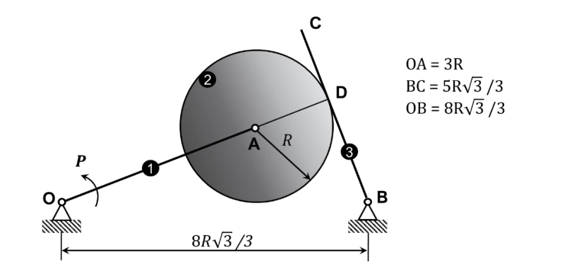
| Variable | Valor |
|---|---|
| Barra \(OA\) | longitud \(3R\), masa \(2M\) |
| Disco | radio \(R\), masa \(M\), articulado en \(A\) |
| Apoyo del disco | \(D\), sin rozamiento sobre barra \(BC\) |
| Par aplicado | \(P\) antihorario sobre la barra |
| Incógnita | valor de \(P\) para equilibrio |
Geometría oculta: la barra \(OA\) forma 30° con la horizontal y la barra \(BC\) le es perpendicular (120° con la horizontal). La demostración analítica muestra que el punto de tangencia \(D\) se encuentra a exactamente \(4R\) de \(O\), y el centro del disco \(A\) está a \(3R\) de \(O\). La distancia de \(A\) a \(BC\) es \(4R-3R=R\), que coincide con el radio del disco: la barra \(OA\) es estrictamente perpendicular a \(BC\) en la posición de equilibrio.
Como el disco no tiene rozamiento en \(D\), la reacción \(N\) es perpendicular a \(BC\), es decir, apunta a lo largo de la línea \(OA\) hacia \(O\). Su línea de acción pasa exactamente por \(O\): la reacción \(N\) no genera momento respecto a \(O\). Por tanto basta con los momentos de los pesos y el par \(P\).
¿Por qué? Se aísla el subsistema compuesto por la barra OA y el disco como un único sólido libre. Las fuerzas internas entre barra y disco quedan internas y no aparecen. Solo actúan las fuerzas externas: peso, par P y reacciones en los contactos.
Fuerzas externas sobre el subsistema (articulación en \(O\)):
- Peso de la barra \(OA\): \(2Mg\) ↓ en su centro de gravedad, a \(1{,}5R\) de \(O\).
- Peso del disco: \(Mg\) ↓ en su centro \(A\), a \(3R\) de \(O\).
- Par \(P\) antihorario aplicado sobre la barra.
- Reacción \(N\) en \(D\): perpendicular a \(BC\) → a lo largo de \(OA\) → pasa por \(O\) → momento nulo.
¿Por qué? Al sumar momentos respecto al pivot O se eliminan todas las reacciones en O. La ecuación resultante tiene solo el par P y los momentos de las demás fuerzas externas, dando directamente el valor de P.
Los brazos de palanca son las distancias horizontales (la barra forma 30° con la horizontal, \(\cos30°=\sqrt{3}/2\)):
\[ \text{Brazo de }2Mg:\quad 1{,}5R\cos30° = 1{,}5R\cdot\frac{\sqrt{3}}{2} = \frac{3R\sqrt{3}}{4} \] \[ \text{Brazo de }Mg:\quad 3R\cos30° = 3R\cdot\frac{\sqrt{3}}{2} = \frac{3R\sqrt{3}}{2} \]Los pesos generan momento horario (negativo); el par \(P\) es antihorario (positivo):
\[ \sum M_O=0:\quad P - 2Mg\cdot\frac{3R\sqrt{3}}{4} - Mg\cdot\frac{3R\sqrt{3}}{2}=0 \] \[ P = 3MgR\cdot\frac{\sqrt{3}}{2}\cdot 2 + 3MgR\cdot\frac{\sqrt{3}}{2}\cdot 1 \]Desarrollando directamente:
\[ P = 2Mg\cdot\frac{3R\sqrt{3}}{4} + Mg\cdot\frac{3R\sqrt{3}}{2} = \frac{6MgR\sqrt{3}}{4} + \frac{6MgR\sqrt{3}}{4} = \frac{12MgR\sqrt{3}}{4} \cdot \frac{4}{4} \] \[ P = 3MgR\sqrt{3} = 3\sqrt{3}\,MgR \]Sistema articulado con disco y resorte: constante \(k\) ★ ★ Nivel Examen
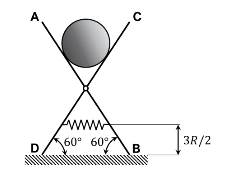
| Variable | Valor |
|---|---|
| Barras en V | masa \(M\) cada una, longitud total \(L = 4R\sqrt{3}\) |
| Disco | radio \(R\), masa \(M\) |
| Resorte ideal | une los anclajes inferiores (constante \(k\)) |
| Incógnita | posición de equilibrio y \(k\) |
El sistema tiene un único grado de libertad: el ángulo \(\theta\). El equilibrio se alcanza cuando la energía potencial total \(V = V_g + V_k\) es mínima, es decir:
\[ \frac{dV}{d\theta} = \frac{dV_g}{d\theta} + \frac{dV_k}{d\theta} = 0 \]El resorte es ideal (\(l_0=0\)): \(V_k = \tfrac{1}{2}k\,x_k^2\) donde \(x_k\) es su longitud actual.
¿Por qué? Las alturas de los centros de masa son funciones de θ. Se expresan analíticamente usando trigonométrica del sistema para poder calcular la energía potencial gravitatoria en función de la coordenada generalizada.
Semilongitud de cada barra: \(L/2=2R\sqrt{3}\).
\[ y_E = 2R\sqrt{3}\sin\theta \qquad (\text{altura de la articulación }E) \]El disco toca la barra con su normal. El ángulo barra-vertical es \(90°-\theta\), por lo que la distancia del centro del disco a \(E\) a lo largo del eje de simetría es \(R/\cos\theta\):
\[ y_O = y_E + \frac{R}{\cos\theta} = 2R\sqrt{3}\sin\theta + \frac{R}{\cos\theta} \]¿Por qué? La longitud del resorte varía con θ. Se expresa \(x_k(θ)\) geométricamente. La energía potencial elástica es \(U_k = \frac{1}{2}k(x_k - L_0)^2\). Esta energía también entra en la condición de equilibrio.
A \(\theta=60°\) el plano indica que el resorte se ancla a altura \(3R/2\). La distancia horizontal desde \(E\) al anclaje es:
\[ d_{\text{resorte}} = \frac{L}{2} - s = 2R\sqrt{3} - R\sqrt{3} = R\sqrt{3} \]La longitud total del resorte (doble de la proyección horizontal de cada segmento):
\[ x_k = 2\cdot(R\sqrt{3})\cos\theta = 2R\sqrt{3}\cos\theta \]¿Por qué? La energía potencial total es la suma de la elástica del resorte y la gravitatoria de cada masa: \(U = U_k + \sum m_i g h_i(θ)\). El equilibrio estático requiere \(dU/dθ = 0\).
\[ V_g = (2M\cdot g\cdot y_E) + (M\cdot g\cdot y_O) = MgR\!\left(6\sqrt{3}\sin\theta + \frac{1}{\cos\theta}\right) \] \[ V_k = \frac{1}{2}k\,x_k^2 = \frac{1}{2}k\,(2R\sqrt{3}\cos\theta)^2 = 6kR^2\cos^2\theta \]¿Por qué? Se calcula \(dU/dθ\) (o \(d^2U/dθ^2\) para determinar estabilidad) y se evalúa en θ = 60°. Si \(dU/dθ = 0\), la posición es de equilibrio. Si además \(d^2U/dθ^2 > 0\), el equilibrio es estable.
\[ \frac{dV_g}{d\theta} = MgR\!\left(6\sqrt{3}\cos\theta + \frac{\sin\theta}{\cos^2\theta}\right) \] \[ \frac{dV_k}{d\theta} = -12kR^2\sin\theta\cos\theta \]Evaluando en \(\theta=60°\) (\(\sin60°=\sqrt{3}/2\), \(\cos60°=1/2\)):
\[ \frac{dV_g}{d\theta}\bigg|_{60°} = MgR\!\left(6\sqrt{3}\cdot\frac{1}{2}+\frac{\sqrt{3}/2}{1/4}\right) = MgR\!\left(3\sqrt{3}+2\sqrt{3}\right) = 5\sqrt{3}\,MgR \] \[ \frac{dV_k}{d\theta}\bigg|_{60°} = -12kR^2\cdot\frac{\sqrt{3}}{2}\cdot\frac{1}{2} = -3\sqrt{3}\,kR^2 \] \[ 5\sqrt{3}\,MgR - 3\sqrt{3}\,kR^2 = 0 \quad\Rightarrow\quad 5Mg = 3kR \] \[ k = \frac{5Mg}{3R} \]Barra horizontal en semiesfera libre: longitud \(L\) ★ ★ Nivel Examen
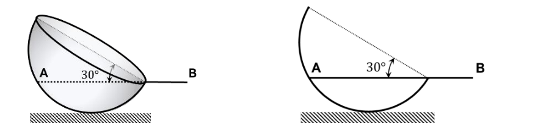
| Variable | Valor |
|---|---|
| Semiesfera (casquete) | masa \(M\), radio \(R\), sin rozamiento |
| Barra homogénea | masa \(M\), longitud \(L\) (incógnita) |
| Incógnita | longitud \(L\) para equilibrio del sistema |
Condición de estabilidad global: sin rozamiento, la única reacción del suelo es normal (vertical). Para que el conjunto no ruede, el CG del sistema (casquete + barra) debe estar exactamente sobre la vertical de contacto (\(x_{CG}=0\)).
Como ambas masas son iguales, la condición simplifica a:
\[ x_{\text{bowl}} + x_{\text{bar}} = 0 \quad\Rightarrow\quad x_{\text{bar}} = -x_{\text{bowl}} \]El CG del casquete semiesférico está a \(R/2\) del centro geométrico \(O\) a lo largo de su eje de simetría (dato del Tema 2).
¿Por qué? El centro de masa de un casquete esférico (parte de una esfera) se calcula por integración. Al estar inclinado 30°, sus coordenadas en el sistema de referencia global dependen tanto de la geometría del casquete como del ángulo de inclinación.
Con el eje de simetría del casquete inclinado 30° respecto a la vertical hacia la izquierda, la coordenada horizontal del CG (a \(R/2\) a lo largo del eje) es:
\[ x_{\text{bowl}} = -\frac{R}{2}\sin30° = -\frac{R}{2}\cdot\frac{1}{2} = -\frac{R}{4} \]Por la condición de equilibrio:
\[ x_{\text{bar}} = +\frac{R}{4} \]¿Por qué? La barra apoya en dos puntos sobre el casquete. Se calculan las coordenadas de estos puntos de apoyo a partir de la geometría del casquete y la longitud de la barra.
Apoyo C (borde derecho del casquete): el eje de simetría inclina 30° a la izquierda, así que el labio derecho queda en:
\[ x_C = R\cos30° = \frac{R\sqrt{3}}{2} \qquad y_C = R\sin30° = \frac{R}{2} \]Apoyo A (extremo izquierdo de la barra, apoyado en la pared interior a la misma altura \(y=R/2\)):
\[ x_A^2 + \left(\frac{R}{2}\right)^2 = R^2 \quad\Rightarrow\quad x_A^2 = R^2 - \frac{R^2}{4} = \frac{3R^2}{4} \]Tomamos la raíz negativa (extremo izquierdo):
\[ x_A = -\frac{R\sqrt{3}}{2} \]¿Por qué? La longitud de la barra que equilibra la pieza se obtiene de la condición de equilibrio: el CG del sistema (casquete + barra) debe estar directamente sobre el punto de apoyo (o sobre los apoyos).
El CG de la barra está en su punto medio, a \(L/2\) del extremo izquierdo \(A\):
\[ x_{\text{bar}} - x_A = \frac{L}{2} \] \[ \frac{R}{4} - \left(-\frac{R\sqrt{3}}{2}\right) = \frac{L}{2} \] \[ \frac{R}{4} + \frac{2R\sqrt{3}}{4} = \frac{L}{2} \quad\Rightarrow\quad \frac{R(1+2\sqrt{3})}{4} = \frac{L}{2} \] \[ L = \frac{(1+2\sqrt{3})R}{2} \]Celosía: reacciones externas y esfuerzos en barras ★ ★ Nivel Examen
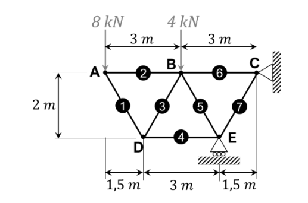
| Variable | Valor |
|---|---|
| Celosía | método de los nudos |
| Cargas | \(8\ \text{kN}\ ↓\) en \(A=(0,2)\ \text{m}\); \(4\ \text{kN}\ ↓\) en \(B=(3,2)\ \text{m}\) |
| Apoyos | \(C=(6,2)\ \text{m}\) (articulación); \(E=(4{,}5,0)\ \text{m}\) (rodillo) |
| Incógnita | fuerzas en todas las barras |
En una celosía ideal (barras biarticuladas, cargas solo en nudos, sin masa): cada barra transmite únicamente un esfuerzo axial (tracción o compresión). El análisis se divide en dos etapas:
- Reacciones externas: equilibrio del sistema completo (\(\sum M=0\), \(\sum F=0\)).
- Método de los nudos: aislar cada nudo y aplicar \(\sum F_x=0\), \(\sum F_y=0\). Convenio: esfuerzo positivo = tracción (la barra tira del nudo).
¿Por qué? Antes de analizar la celosía, hay que calcular las reacciones en los apoyos. Sumando momentos respecto a C se obtiene E_y directamente, sin necesidad de conocer las fuerzas internas en las barras.
Momentos respecto a \(C=(6,2)\), antihorario positivo. Los brazos son distancias horizontales:
\[ \sum M_C=0:\quad (8\cdot 6)+(4\cdot 3)-(E_y\cdot 1{,}5)=0 \] \[ 48+12-1{,}5\,E_y=0 \quad\Rightarrow\quad E_y=\frac{60}{1{,}5}=40\ \text{kN} \]¿Por qué? Con E_y conocida, las ecuaciones ∑Fx=0 y ∑Fy=0 del sistema completo dan las componentes de la reacción en C.
\[ \sum F_y=0:\quad -8-4+E_y+C_y=0 \quad\Rightarrow\quad C_y=12-40=-28\ \text{kN} \] \[ \sum F_x=0:\quad C_x=0 \]¿Por qué? En el método de los nudos se aísla cada nudo y se aplica ∑F=0. Se empieza por el nudo con menos barras desconocidas (generalmente un nudo extremo). El equilibrio del nudo A da directamente los esfuerzos en las barras adyacentes.
Nudo \(A=(0,2)\). Barras concurrentes: \(AD\) (hacia \(D=(1{,}5,0)\)) y \(AB\) (horizontal hacia \(B\)). Carga externa: 8 kN↓.
Geometría de la barra \(AD\): \(\Delta x=1{,}5\ \text{m}\), \(\Delta y=-2\ \text{m}\), \(L_{AD}=\sqrt{1{,}5^2+2^2}=2{,}5\ \text{m}\).
\[ \text{prop. vert.}=\frac{-2}{2{,}5}=-0{,}8 \qquad \text{prop. horiz.}=\frac{1{,}5}{2{,}5}=0{,}6 \] \[ \sum F_y=0:\quad -8+N_{AD}\cdot(-0{,}8)=0 \quad\Rightarrow\quad N_{AD}=-10\ \text{kN}\quad(\textbf{Compresión}) \] \[ \sum F_x=0:\quad N_{AB}+(-10)(0{,}6)=0 \quad\Rightarrow\quad N_{AB}=6\ \text{kN}\quad(\textbf{Tracción}) \]Reacción en \(C\): \(C_x=0\), \(C_y=-28\ \text{kN}\) (↓)
Barra \(AD\): \(N_{AD}=-10\ \text{kN}\) (Compresión)
Barra \(AB\): \(N_{AB}=+6\ \text{kN}\) (Tracción)
Celosía de triángulos equiláteros: esfuerzos en elementos 1 y 2 ★ ★ Nivel Examen
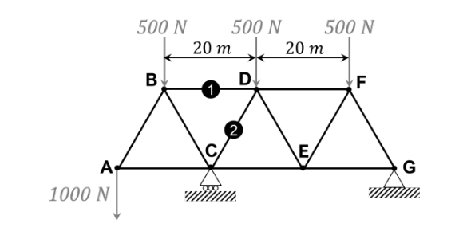
| Variable | Valor |
|---|---|
| Celosía | triángulos equiláteros, lado \(L\) |
| Nodos inferiores | \(A,C,E,G\) separados \(L\) |
| Nodos superiores | \(B,D,F\) |
| Incógnita | fuerzas en las barras (método de los nudos) |
Celosía ideal: barras biarticuladas, cargas solo en nudos. Esfuerzo positivo = tracción. Se usan \(\sin60°=\sqrt{3}/2\) y \(\cos60°=0{,}5\).
Estrategia: reacciones externas primero (\(\sum M_C=0\)), luego método de los nudos progresivamente desde \(A\) hacia el interior.
¿Por qué? Igual que antes: se calculan las reacciones en los apoyos antes de empezar el análisis de la celosia. El cálculo de R_G se hace por momentos respecto a C para no tener que resolver un sistema.
Momentos respecto a \(C\) (en \(x=L\)), antihorario positivo. Brazos medidos desde \(C\):
\[ 1000(-L)+500\!\left(\frac{L}{2}\right)+500\!\left(-\frac{L}{2}\right)+500\!\left(-\frac{3L}{2}\right)+R_G(2L)=0 \] \[ -1000L+250L-250L-750L+2LR_G=0 \quad\Rightarrow\quad 2R_G=-\frac{1750L}{L}+0 \] \[ 250+2R_G=0 \quad\Rightarrow\quad R_G=-125\ \text{N} \] \[ \sum F_y=0:\quad R_C+R_G-1000-500-500-500=0 \quad\Rightarrow\quad R_C=2625\ \text{N} \]¿Por qué? El nudo A tiene dos barras desconocidas. Con la reacción en A conocida (de las externas), el equilibrio del nudo da un sistema 2x2 que se resuelve fácilmente por proyección en las direcciones de las barras.
Fuerzas en \(A\): carga 1000 N↓; barra \(AB\) (diagonal derecha-arriba, 60°); barra \(AC\) (horizontal derecha).
\[ \sum F_y=0:\quad -1000+N_{AB}\sin60°=0 \quad\Rightarrow\quad N_{AB}=\frac{1000}{\sqrt{3}/2}=\frac{2000}{\sqrt{3}}\approx 1154{,}7\ \text{N (T)} \] \[ \sum F_x=0:\quad N_{AC}+N_{AB}\cos60°=0 \quad\Rightarrow\quad N_{AC}=-\frac{2000}{\sqrt{3}}\cdot 0{,}5=-\frac{1000}{\sqrt{3}}\approx -577{,}4\ \text{N (C)} \]¿Por qué? Con el esfuerzo en AB ya calculado, el nudo B tiene solo 2 incógnitas nuevas. Se aplica ∑F=0 en el nudo B para obtener los esfuerzos en BC y BD.
Fuerzas en \(B\): carga 500 N↓; barra \(AB\) conocida; barra \(BC\) (diagonal izquierda-abajo); barra \(BD\) (horizontal derecha).
\[ \sum F_y=0:\quad -500-N_{AB}\sin60°-N_{BC}\sin60°=0 \] \[ -500-1000-N_{BC}\cdot\frac{\sqrt{3}}{2}=0 \quad\Rightarrow\quad N_{BC}=-\frac{3000}{\sqrt{3}}\approx -1732{,}1\ \text{N (C)} \] \[ \sum F_x=0:\quad -N_{AB}\cos60°+N_{BC}\cos60°+N_{BD}=0 \] \[ -\frac{1000}{\sqrt{3}}+\frac{3000}{2\sqrt{3}}+N_{BD}=0 \] \[ N_{BD}=\frac{2500}{\sqrt{3}}\approx 1443{,}4\ \text{N (T)} \]¿Por qué? Avanzando nudo a nudo, en C ya se conocen los esfuerzos en AC y BC. La única incógnita es CD. El equilibrio en C da su valor. Es una buena práctica verificar la solución en el último nudo.
Fuerzas en \(C\): reacción \(R_C=2625\ \text{N}\uparrow\); barras \(AC\), \(BC\), \(CE\), \(CD\).
\[ \sum F_y=0:\quad 2625+N_{BC}\sin60°+N_{CD}\sin60°=0 \] \[ 2625+\left(-\frac{3000}{\sqrt{3}}\right)\frac{\sqrt{3}}{2}+N_{CD}\frac{\sqrt{3}}{2}=0 \] \[ 2625-1500+N_{CD}\frac{\sqrt{3}}{2}=0 \quad\Rightarrow\quad N_{CD}=-\frac{2250}{\sqrt{3}}\approx -1299{,}0\ \text{N (C)} \]Elemento 1 — Barra \(BD\): \(N_{BD}=\dfrac{2500}{\sqrt{3}}\approx 1443{,}4\ \text{N}\) (Tracción)
Elemento 2 — Barra \(CD\): \(N_{CD}=-\dfrac{2250}{\sqrt{3}}\approx -1299{,}0\ \text{N}\) (Compresión)
Fuerzas en el panel central de una celosía ★ ★ Nivel Examen
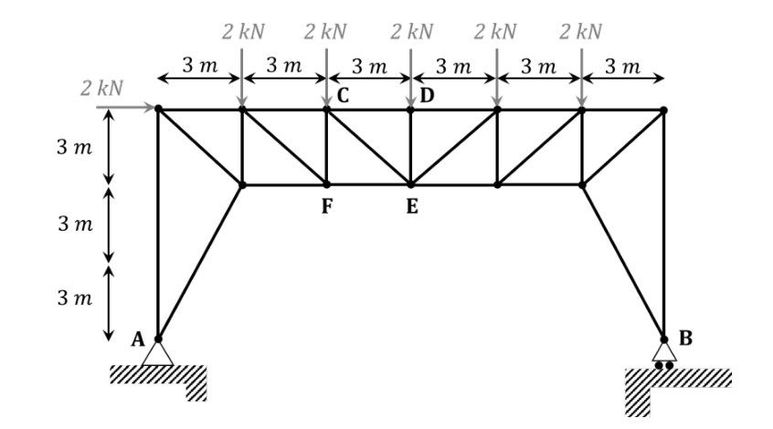
| Variable | Valor |
|---|---|
| Celosía | cordones paralelos (tipo Pratt/Howe) |
| Altura de panel | \(h = 3\ \text{m}\) |
| Longitud de vano | \(3\ \text{m}\) |
| Cargas | \(2\ \text{kN}\) en nodos superiores (simétricas) |
| Incógnita | esfuerzos en las barras del panel central (sección de Ritter) |
Método de las Secciones: se corta la celosía con un plano que secciona las barras de interés y se estudia el equilibrio de uno de los semisistemas resultantes. El semisistema queda como un sólido rígido con las fuerzas externas conocidas y los esfuerzos de las barras cortadas como incógnitas.
Propiedad de la simetría: en el panel central de una celosía con carga simétrica, el esfuerzo cortante neto es cero (\(V=0\)). Esto implica directamente que la barra diagonal central \(CE\) tiene esfuerzo nulo.
El momento flector externo en el centro vale:
\[ M_{\text{centro}} = R \cdot \frac{L}{2} - \sum(\text{cargas}\times\text{brazos}) = 36\ \text{kN·m} \]¿Por qué? La barra diagonal del panel central puede ser de cortante nulo (barra cero) si la geometría y las cargas lo permiten. Se verifica proyectando el equilibrio en la dirección perpendicular a las otras dos barras cortadas por la sección.
En el panel central de una celosía simétrica con carga simétrica, el esfuerzo cortante neto es cero. Las barras horizontales (\(CD\) y \(EF\)) no pueden absorber fuerzas verticales. La única barra que podría absorber el cortante es la diagonal \(CE\). Como \(V=0\):
\[ \sum F_y = 0 \quad\Rightarrow\quad T_{CE} = 0 \]La barra \(CE\) es un elemento de fuerza cero bajo esta configuración de carga.
¿Por qué? Con la sección de Ritter que corta tres barras (CE, CD, EF), sumando momentos respecto a E se eliminan las barras CE y EF. Queda una ecuación directa en el esfuerzo del cordón superior CD.
Se toman momentos respecto al nodo inferior \(E\) para eliminar las incógnitas de \(CE\) y \(EF\). El momento flector externo a la izquierda del corte es \(M_{\text{centro}}=36\ \text{kN·m}\).
\[ \sum M_E=0:\quad T_{CD}\cdot h - M_{\text{centro}}=0 \] \[ T_{CD}\cdot 3 - 36=0 \quad\Rightarrow\quad T_{CD}=12\ \text{kN} \]¿Por qué? Análogamente, sumando momentos respecto a C se elimina el cordón superior y la diagonal, obteniendo directamente el esfuerzo en el cordón inferior EF.
Momentos respecto al nodo superior \(C\) para eliminar \(CD\) y \(CE\):
\[ \sum M_C=0:\quad T_{EF}\cdot h - M_{\text{centro}}=0 \] \[ T_{EF}\cdot 3 - 36=0 \quad\Rightarrow\quad T_{EF}=12\ \text{kN} \]\(T_{CD} = -12\ \text{kN}\) (Compresión)
\(T_{EF} = +12\ \text{kN}\) (Tracción)
Celosía paramétrica: esfuerzos en barras 1–11 ★ ★ Nivel Examen
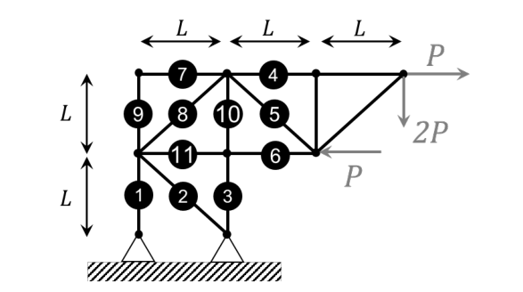
| Variable | Valor |
|---|---|
| Celosía | diagonales a \(45°\), longitud de panel \(L\) |
| Cargas externas | en términos de \(P\) |
| Incógnita | esfuerzos en las barras 1 a 11 |
Se combina el Método de las Secciones (para grupos de barras, tomando momentos en la intersección de las demás barras cortadas) con el Método de los Nudos (para barras individuales en nodos específicos).
Con diagonales a 45°: \(\sin45°=\cos45°=1/\sqrt{2}\). Convenio: esfuerzo positivo = tracción.
¿Por qué? Una sección vertical en el panel central corta las barras que forman ese panel. Con ∑Fx=0, ∑Fy=0 y ∑M=0 del trozo de celosía a la izquierda de la sección se calculan los tres esfuerzos desconocidos.
Se aísla la porción derecha de la estructura.
Barra 4 (cordón superior): momentos en la intersección de las barras 5 y 6 (nodo inferior del corte). La carga resultante neta a la derecha del corte es \(3P\):
\[ \sum M=0:\quad N_4\cdot L - 3PL=0 \quad\Rightarrow\quad N_4=3P\ \textbf{(T)} \]Barra 6 (cordón inferior): momentos en la intersección de las barras 4 y 5 (nodo superior del corte):
\[ \sum M=0:\quad N_6\cdot L - 3PL=0 \quad\Rightarrow\quad N_6=3P\ \textbf{(C)} \]Barra 5 (diagonal 45°): la porción derecha debe soportar una carga vertical neta de \(2P\)↓:
\[ \sum F_y=0:\quad N_5\cdot\frac{1}{\sqrt{2}}-2P=0 \quad\Rightarrow\quad N_5=2\sqrt{2}\,P\ \textbf{(T)} \]¿Por qué? La sección horizontal sobre los anclajes corta las barras de la cuerda superior. El equilibrio del trozo superior o inferior de la celosia da los esfuerzos. Es el método de la sección aplicado a corte horizontal.
Se aísla la superestructura (todo por encima de la sección horizontal).
Barra 3 (pilar derecho): momentos en el apoyo izquierdo para anular \(N_1\) y la diagonal \(N_2\). El momento neto de las cargas externas que vuelcan la estructura es \(7PL\):
\[ \sum M=0:\quad N_3\cdot L - 7PL=0 \quad\Rightarrow\quad N_3=7P\ \textbf{(C)} \]Barra 1 (pilar izquierdo): equilibrio vertical global (\(\sum F_y=0\)). Carga total externa = \(2P\)↓; barra 3 empuja \(7P\)↑:
\[ -N_1+7P-2P=0 \quad\Rightarrow\quad N_1=5P\ \textbf{(T)} \]Barra 2 (diagonal inferior): las cargas horizontales externas se anulan entre sí → esfuerzo cortante horizontal neto = 0:
\[ \sum F_x=0 \quad\Rightarrow\quad N_2=0 \]¿Por qué? Una vez conocidos los esfuerzos en las barras principales, las barras restantes se calculan nudo a nudo. Se elige el orden de nudos que minimice el número de incógnitas en cada equilibrio.
Nodo superior izquierdo (barras 7 horizontal y 9 vertical, sin carga externa):
\[ \sum F_x=0\Rightarrow N_7=0 \qquad \sum F_y=0\Rightarrow N_9=0 \]Nodo intermedio izquierdo (confluyen barras 9=0, barra 1=5P↓, diagonal 8, barra 11):
\[ \sum F_y=0:\quad N_8\cdot\frac{1}{\sqrt{2}}-5P=0 \quad\Rightarrow\quad N_8=5\sqrt{2}\,P\ \textbf{(T)} \] \[ \sum F_x=0:\quad N_{11}+N_8\cdot\frac{1}{\sqrt{2}}=0 \quad\Rightarrow\quad N_{11}=-5P\ \textbf{(C)} \]Pilar central \(N_{10}\): acumulación de compresiones de las diagonales superiores e inferiores que fluyen por el centro de la celosía:
\[ N_{10}=7P\ \textbf{(C)} \]\(N_4=3P\) (T) · \(N_5=2\sqrt{2}\,P\) (T) · \(N_6=3P\) (C)
\(N_7=0\) · \(N_8=5\sqrt{2}\,P\) (T) · \(N_9=0\)
\(N_{10}=7P\) (C) · \(N_{11}=5P\) (C)
Celosía tipo Pratt: barras \(CD\), \(CF\) y \(EF\) ★ ★ Nivel Examen
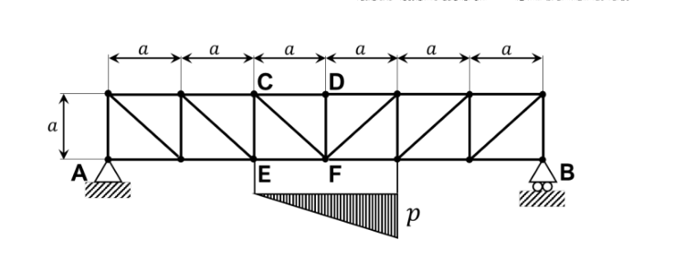
| Variable | Valor |
|---|---|
| Celosía | tipo Pratt, 6 paneles |
| Longitud y altura de panel | \(a \times a\) |
| Apoyos | \(A\) articulación izq.; \(B\) rodillo der. |
| Barras a analizar | \(CD\), \(CF\) y \(EF\) (sección de Ritter) |
Clave del ejercicio: la carga distribuida está "suspendida entre dos cordones" — no actúa directamente sobre los nudos de la celosía. Hay que separarla de la celosía y convertirla en sus fuerzas equivalentes en los nudos adyacentes antes de aplicar el método de las secciones.
Una vez convertida a cargas nodales equivalentes, se calcula la reacción en \(A\) y se aplica el método de las secciones cortando por las barras \(CD\), \(CF\) y \(EF\):
- \(\sum M_F = 0\) (elimina \(T_{CF}\) y \(T_{EF}\)) → da \(T_{CD}\).
- \(\sum M_C = 0\) (elimina \(T_{CD}\) y \(T_{CF}\)) → da \(T_{EF}\).
- \(\sum F_y = 0\) (el cortante en esa sección es nulo) → da \(T_{CF} = 0\).
¿Por qué? Las celosia sólo pueden soportar cargas en los nudos (las barras son biarticuladas). La carga distribuida sobre el cordón superior se convierte en cargas puntuales equivalentes en los nudos, como si fuera una viga simplemente apoyada en cada tramo.
La carga uniforme \(p\) (N/m) suspendida a lo largo de un panel \(a\) se reemplaza por su resultante \(Q = p\cdot a\) aplicada en el centroide del tramo (a \(a/2\) de cada nodo extremo). Se distribuye en partes iguales a los dos nudos del cordón inferior que la flanquean:
\[ Q_E = Q_F = \frac{p\cdot a}{2} \quad\text{(↓ en cada nudo)} \]Una vez convertida, la celosía solo tiene cargas en los nudos y se puede analizar por los métodos estándar.
¿Por qué? Con las cargas nodales equivalentes, se calcula el sistema completo como una estructura con cargas puntuales en los nudos. El equilibrio global da las reacciones en los apoyos.
Con la geometría de 6 paneles de ancho \(a\), la carga neta total es \(pa\) y su resultante actúa a \(a/2\) de los nodos \(E\) y \(F\). Aplicando \(\sum M_A=0\) y \(\sum M_B=0\) se obtienen las reacciones verticales en \(A\) y \(B\). No hay carga horizontal → reacción horizontal en \(A\) es nula.
¿Por qué? La diagonal en el panel central suele ser de esfuerzo nulo si la carga es simétrica o si las cargas en los nudos adyacentes se compensan. Se verifica proyectando el equilibrio en la dirección perpendicular a las otras barras cortadas.
La sección corta \(CD\) (cordón superior), \(CF\) (diagonal) y \(EF\) (cordón inferior). En este panel el esfuerzo cortante neto de la sección es cero, porque la carga distribuida se aplicó exactamente en los nodos \(E\) y \(F\) flanqueantes y la reacción queda equilibrada:
\[ \sum F_y = 0 \quad\Rightarrow\quad T_{CF}\cdot\sin45° = 0 \quad\Rightarrow\quad \boxed{T_{CF} = 0} \]¿Por qué? Sección de Ritter: se cortan CD, CF y EF. Sumando momentos respecto a F se elimina CF y EF. Queda una ecuación directa en el esfuerzo de CD.
Momentos respecto a \(F\) (nudo inferior del corte, donde concurren \(CF\) y \(EF\)). Como \(T_{CF}=0\), solo interviene \(T_{CD}\) con brazo \(a\) (la altura del panel):
\[ \sum M_F = 0:\quad T_{CD}\cdot a + M_F^{\text{ext}} = 0 \] \[ \boxed{T_{CD} = -\frac{pa}{3}}\ \textbf{(Compresión)} \]¿Por qué? Sumando momentos respecto a C se elimina CD y CF. Queda una ecuación directa en el esfuerzo del cordón inferior EF.
Momentos respecto a \(C\) (nudo superior del corte, donde concurren \(CD\) y \(CF\)). Con \(T_{CF}=0\), solo interviene \(T_{EF}\) con brazo \(a\):
\[ \sum M_C = 0:\quad T_{EF}\cdot a + M_C^{\text{ext}} = 0 \] \[ \boxed{T_{EF} = \frac{8pa}{9}}\ \textbf{(Tracción)} \]\(T_{CF} = 0\) (elemento de fuerza cero)
\(T_{EF} = \dfrac{8pa}{9}\) (Tracción)
Barras \(ABC\) y \(CDE\) con polea en \(D\) ★ ★ Nivel Examen
Geometría: \(A=(0,0)\) articulación; \(B=(0,L)\) esquina con par \(PL\) (sentido antihorario) y carga \(q_0\) en el tramo \(AB\); \(C=(L,L)\) articulación interna; \(D=(L+L/2,\,L)\) con polea; \(E=(L+L/2,\,L/2)\) articulación.
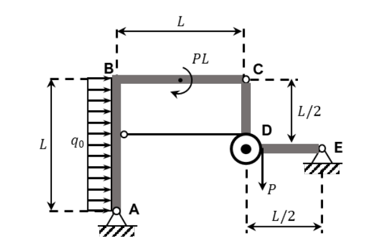
| Variable | Valor |
|---|---|
| Barras | \(ABC\) y \(CDE\) unidas por articulación en \(C\) |
| Polea en D | sin rozamiento, radio \(L/8\), carga \(P\) |
| Carga distribuida | \(q_0 = P/L\) sobre \(ABC\) |
| Incógnitas | reacciones en todos los apoyos |
El problema es similar a los ejercicios 3.9 y 3.10 (dos sólidos + polea). La polea es ideal (\(T=P\) en todo el cable): la carga cuelga en un lado vertical y el cable redirige hacia la barra \(ABC\). La polea transmite al pasador \(D\) la resultante vectorial de las dos tensiones.
Con articulaciones en \(A\) y \(E\) (4 incógnitas externas) y articulación interna en \(C\) (2 más), se dispone de 6 ecuaciones para 6 incógnitas.
Estrategia: equilibrio global del sistema (par+q0 → relaciones entre reacciones) + despiece de cada barra.
¿Por qué? El cable aplica fuerzas en los puntos donde entra y sale del sistema. Si la tensión es la misma en toda la cuerda, se calculan las componentes de cada rama del cable sobre el elemento estructural.
La polea (sin rozamiento) en \(D\) redirige el cable. Tensión \(T=P\) en todo el cable:
- Segmento vertical (peso colgante): fuerza \(P\) hacia abajo sobre la polea en \(D\).
- Segmento horizontal (va a la barra \(ABC\) en \(B\)): fuerza \(P\) hacia la izquierda sobre la polea.
Fuerza resultante del cable sobre la barra \(CDE\) en \(D\): \((-P,\,-P)\).
Fuerza del cable sobre la barra \(ABC\) en \(B\): \((+P,\,0)\).
¿Por qué? Con las fuerzas del cable ya conocidas, se aísla la barra ABC y se plantean ∑Fx=0, ∑Fy=0, ∑M=0. La barra tiene reacciones en sus apoyos y las fuerzas del cable, dando todas las reacciones externas de la barra.
Fuerzas sobre \(ABC\): distribución \(q_0\) → \(P\) a la derecha en \((0,L/2)\); par \(PL\) antihorario; cable \(P\) a la derecha en \(B=(0,L)\); reacciones \((A_x,A_y)\) en \(A\) y \((C_x,C_y)\) en \(C\).
\[ \sum M_A=0:\quad -\frac{PL}{2}+PL-PL+L(C_y-C_x)=0 \quad\Rightarrow\quad C_y-C_x=\frac{P}{2} \]¿Por qué? La barra CDE tiene reacciones internas en C (procedentes de la barra ABC) y reacciones externas en E. Sumando momentos en C se elimina la reacción en C y se obtiene E directamente.
Momentos respecto a \(C=(L,L)\) para barra \(CDE\) con fuerza \((-P,-P)\) en \(D=(L+L/2,\,L)\) y \((E_x,E_y)\) en \(E=(L+L/2,\,L/2)\):
\[ \sum M_C=0:\quad \frac{L}{2}(-P)-0\cdot(-P)+\frac{L}{2}E_y+\left(-\frac{L}{2}\right)E_x=0 \] \[ -\frac{PL}{2}+\frac{L}{2}(E_y-E_x)=0 \quad\Rightarrow\quad E_y-E_x=P \]Resolviendo el sistema completo de 6 ecuaciones:
\[ E_x=\frac{P}{2} \qquad E_y=\frac{3P}{2} \] \[ A_x=\frac{P}{2} \qquad A_y=\frac{P}{2} \]Viga \(AB\) + celosía: barras \(GH\), \(FH\), \(EF\), \(BC\), \(CD\) ★ ★ Nivel Examen
Todos los triángulos de la celosía son equiláteros o rectángulos con ángulos de 30° y 60°. Lado base = 4 m.
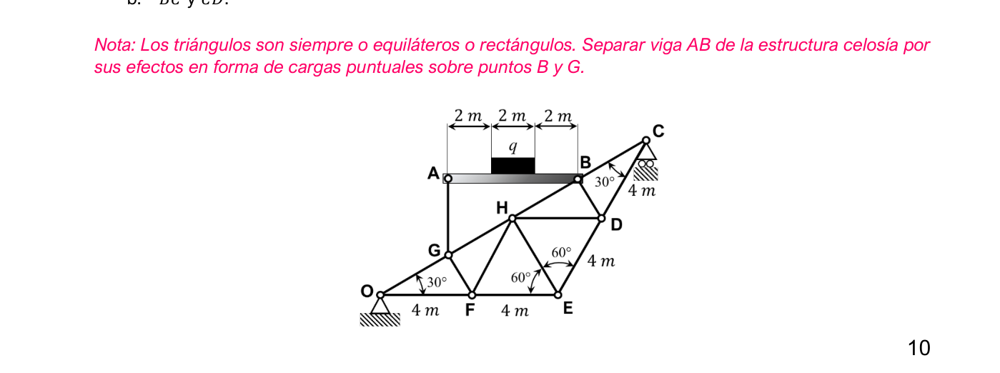
| Variable | Valor |
|---|---|
| Viga \(AB\) | articulada en nudo \(B\) de la celosía |
| Barra biarticulada | conecta \(AB\) con nudo \(G\) de la celosía |
| Carga distribuida | \(q = 10\ \text{N/m}\) en 2 m centrales |
| Incógnitas | fuerzas internas en las barras |
Clave: separar la viga \(AB\) de la celosía y tratar sus efectos como cargas puntuales sobre los nudos \(B\) y \(G\).
La barra biarticulada \(BG\) (sin masa) es un elemento de dos fuerzas: solo transmite esfuerzo axial en la dirección \(BG\). Una vez conocidas las fuerzas en \(B\) y \(G\), se analiza la celosía con esas cargas adicionales mediante el método de los nudos o de las secciones.
Con \(\sin30°=0{,}5\), \(\cos30°=\sqrt{3}/2\), \(\sin60°=\sqrt{3}/2\), \(\cos60°=0{,}5\).
¿Por qué? Se aísla la viga AB con sus cargas y reacciones en los apoyos. Con la celosia articulada en B, la fuerza en B de la celosia sobre la viga es una fuerza horizontal (si B es un rodillo) o genérica (si es un pin). El equilibrio de AB da la magnitud de esa fuerza y las reacciones en los apoyos de la viga.
Carga distribuida \(q=10\ \text{N/m}\) sobre 2 m → resultante \(Q=20\ \text{N}\) aplicada en el centro del tramo cargado.
La viga está apoyada en \(B\) (articulación) y la barra biarticulada \(BG\) actúa en la dirección \(BG\). Resolviendo el equilibrio de la viga, se obtienen las fuerzas que transmite a \(B\) y a \(G\) sobre la celosía.
¿Por qué? Con la carga de la viga AB ya conocida y trasladada a los nudos, se aplica el método de la sección o de los nudos en la zona G-H-F-E. Los triángulos equiláteros tienen todos los ángulos a 60°, lo que simplifica la proyección de las fuerzas.
Con las cargas de la viga trasladadas a los nudos, se aplica el método de las secciones o de los nudos en la zona correspondiente a \(G\), \(H\), \(F\), \(E\). Los triángulos equiláteros tienen todos los ángulos a 60°:
\[ T_{FE}=5\sqrt{3}\ \text{N}\ \textbf{(T)}\qquad T_{GH}=15\ \text{N}\ \textbf{(C)}\qquad T_{FH}=5\sqrt{3}\ \text{N}\ \textbf{(T)} \]¿Por qué? Las barras BC y CD están en el lado derecho de la celosía, con ángulos de 30°. Se aplica el método de los nudos o la sección en la zona B-C-D, usando las reacciones en los apoyos ya calculadas.
Método de los nudos o secciones en la zona \(B\)–\(C\)–\(D\) (lado derecho de la celosía con ángulos 30°):
\[ T_{BC}=10\ \text{N}\ \textbf{(C)}\qquad T_{CD}=10\sqrt{3}\ \text{N}\ \textbf{(T)} \]b) \(T_{BC}=10\ \text{N}\ (\text{C})\quad T_{CD}=10\sqrt{3}\ \text{N}\ (\text{T})\)
Entramado \(ABC\) + \(CDE\): carga distribuida y fuerza horizontal ★ ★ Nivel Examen
Geometría: la barra \(ABC\) tiene altura total \(3a+3a+4a=10a\) con \(A\) en el suelo (articulación), \(B\) a \(3a\) del suelo, \(C\) en el extremo superior. La viga \(CDE\) tiene longitud total \(8a+a=9a\), con \(E\) a la derecha (rodillo) y \(D\) con articulación/barra \(BD\). La fuerza horizontal \(P\) actúa en \(B\).
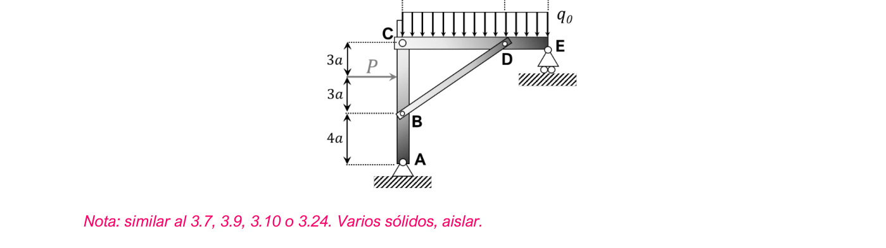
| Variable | Valor |
|---|---|
| Viga \(CDE\) | carga distribuida \(q_0 = P/a\) |
| Barra \(ABC\) | fuerza horizontal \(P\) |
| Incógnitas | fuerzas en \(ABC\) y \(CDE\) en función de \(P\) |
Similar a los ejercicios 3.7, 3.9, 3.10 y 3.24: varios sólidos conectados, hay que aislarlos por separado.
Estrategia:
- Sustituir \(q_0=P/a\) sobre longitud \(9a\) por resultante \(Q=9P\) en el centroide.
- Aplicar equilibrio global del sistema para obtener \(R_E\) y \(R_{Ay}\).
- Aislar cada sólido para obtener el esfuerzo en la barra \(BD\).
¿Por qué? La carga distribuida sobre el cordón superior se convierte en cargas nodales equivalentes. Esto es necesario porque las barras biarticuladas solo transmiten fuerzas axiales, no pueden soportar cargas distribuidas directamente.
La distribución \(q_0=P/a\) sobre la longitud \(9a\) de la viga \(CDE\):
\[ Q = \frac{P}{a}\cdot 9a = 9P \quad \text{aplicada en el centroide (a } 4{,}5a \text{ de }C\text{)} \]¿Por qué? Con las cargas nodales equivalentes, se calcula el equilibrio global de la celosia para obtener las reacciones en los apoyos E y A.
Del equilibrio del sistema completo con las fuerzas externas (\(P\) horizontal en \(B\), carga \(9P\) vertical en \(CDE\)) y las reacciones en \(A\) y \(E\):
\[ R_E=\frac{95P}{18} \qquad R_{Ay}=\frac{67P}{18} \]¿Por qué? Se aplica el método de la sección o de los nudos para calcular el esfuerzo en BD. Se elige el método que requiera menos cálculos previos, normalmente la sección si BD está en el interior de la celosia.
Aislando el sólido correspondiente (viga \(CDE\) o barra \(ABC\)) y aplicando \(\sum M=0\) en el nudo adecuado para eliminar las incógnitas no deseadas:
\[ T_{BD}=\frac{35P}{24}\ \textbf{(Tracción)} \]Anillo en guía circular: resorte \(AB\) y cables ★ ★ Nivel Examen
Nota: el resorte \(AB\) es tangente a la guía circular en \(A\). Los ángulos en el diagrama son 30° y 60°.
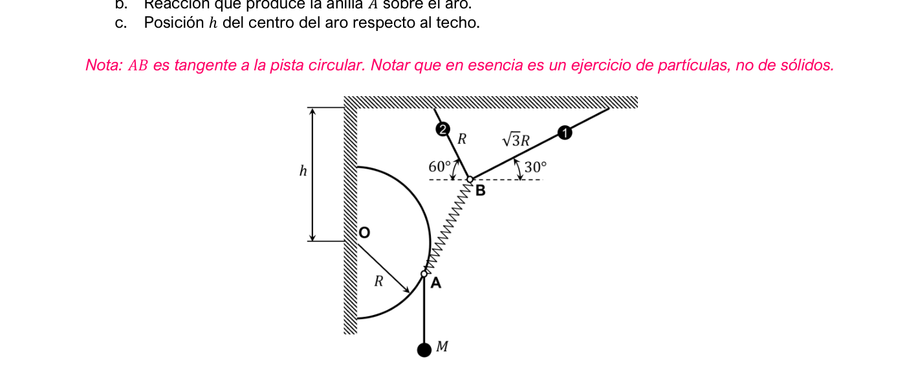
| Variable | Valor |
|---|---|
| Tensión cable 1 | \(T_1 = \dfrac{\sqrt{3}\,kR}{2}\) |
| Tensión cable 2 | \(T_2 = \dfrac{kR}{2}\) |
| Guía circular | radio \(R\), sin rozamiento |
| Incógnita | ángulo de equilibrio y reacciones |
En esencia es un ejercicio de equilibrio de partícula (no de sólido): el anillo \(A\) es el punto de equilibrio con fuerzas concurrentes.
Clave geométrica: el resorte \(AB\) es tangente a la guía circular en \(A\), por lo que el radio \(OA\) es perpendicular a \(AB\). Esto significa que la reacción normal de la guía sobre el anillo actúa en la dirección \(OA\) (radial).
Con el ángulo del resorte \(\alpha_{AB}\) con la horizontal, y la condición \(OA\perp AB\), se determinan la geometría y el equilibrio. La fuerza del resorte es \(F_s = k\delta\) en la dirección \(AB\).
¿Por qué? El aro elástico se deforma bajo la carga. La elongación del aro (resorte) y la inclinación de la barra AB se calculan a partir de la geometría del sistema deformado, suponiendo pequeñas deformaciones.
Del equilibrio del nudo \(B\) (donde confluyen el resorte y los dos cables), usando las tensiones conocidas \(T_1\) y \(T_2\) y las relaciones trigonométricas con los ángulos 30° y 60°:
\[ \sum F_x=0 \;\text{ y }\; \sum F_y=0 \quad\Rightarrow\quad \delta = R \qquad \alpha_{AB}=60° \]El resorte se deforma exactamente \(R\) y forma 60° con la horizontal.
¿Por qué? Con la deformación calculada, la fuerza en el aro es \(F = k \cdot \delta\). La dirección de esta fuerza es tangencial al aro; sus componentes se calculan con el ángulo de inclinación.
Como \(\alpha_{AB}=60°\) y \(OA\perp AB\), el radio \(OA\) forma 30° con la horizontal. La reacción normal de la guía sobre el anillo actúa en dirección \(OA\) (hacia \(O\)). Del equilibrio de la anilla \(A\) con el peso \(Mg\) y la fuerza del resorte \(k\delta=kR\):
\[ \vec{R}_A = \frac{Mg}{2}\!\left(\sqrt{3}\,\hat{\imath}-\frac{1}{2}\,\hat{\jmath}\right) \]La reacción de la anilla sobre el aro es igual y opuesta (3ª Ley de Newton).
¿Por qué? Con las fuerzas en el aro y la barra calculadas, se plantea el equilibrio del nodo donde se une la barra al techo o a la estructura. El equilibrio vertical da la posición h en función de la carga aplicada.
Con \(O\) en la pared vertical y \(OA\) a 30° de la horizontal (hacia abajo-derecha), la posición de \(A\) respecto al techo depende de la altura de \(O\). Sumando las proyecciones verticales:
\[ h = R\!\left(\sqrt{3}-\frac{1}{2}\right) \]b) \(\vec{R}_A=\dfrac{Mg}{2}\!\left(\sqrt{3}\,\hat{\imath}-\dfrac{1}{2}\,\hat{\jmath}\right)\)
c) \(h=R\!\left(\sqrt{3}-\dfrac{1}{2}\right)\)